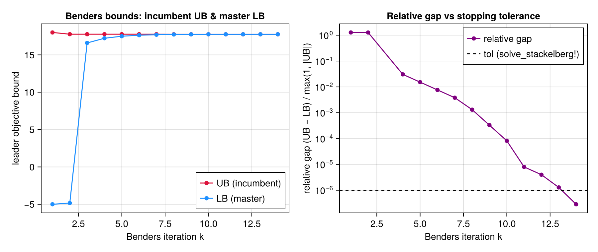
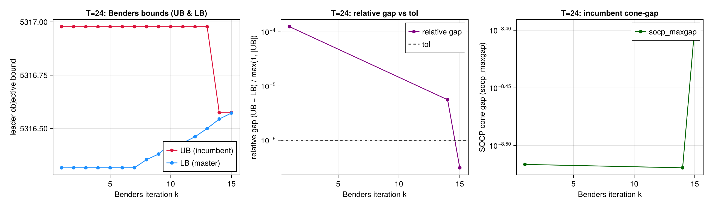

Rung 6 — Stackelberg-Benders (Planning)
This page is the literate proof for the planning layer's single-distributor Stackelberg equilibrium: it executes the real solve_stackelberg! hand-rolled Benders loop end-to-end during the Documenter build, on a toy instance ECONOMICALLY EQUIVALENT to the one the permanent certification regression uses, so the numbers below are a genuinely solved answer — never a hardcoded literal copied from a goldens/test file (mirrors the admm.jl/ pricing_dlmp.jl reproducibility-proof pattern).
The PSR problem-number map — planning-layer symbols
The bilevel game the leader/follower/master triple below solves, mapped to the PSR N1–N2 note's own problem numbers and this project's src/planning/ code symbols:
- Follower LP
α(z)(transmission-reinforcement investment, given a trial coupling flowz) —build_followerconstructs it ONCE;solve_follower!re-solves it at each Benders trial. - Benders master (the leader's epigraph relaxation over
y, accumulating optimality/feasibility cuts from both the follower and the operational oracle) —build_masterconstructs it ONCE;add_optimality_cut!/add_feasibility_cut!append cuts;solve_master!re-solves it. - The outer Benders loop tying the two together against the REUSED v1 operational welfare oracle —
solve_stackelberg!(the entrypoint this page calls live below).
The coupling seam — z ↔ pimport/pag, λj ↔ πs
| Planning-layer symbol | Operational-layer symbol | Where it lives |
|---|---|---|
z (the Benders trial coupling flow) | p_import at the oracle's frontier / the aggregator's own net import p_ag | PlanningOracle's pin[t]: p_import[t] == z[t] (build_planning_oracle); the follower's own coupling[t]: x_op[t] == z[t] (build_follower) |
λ_j[t] ↔ π_s (the coupling-constraint dual) | the DADP/DLMP the v1 operational layer already reports | the oracle's pin dual (oracle_res.π, the optimality-cut gradient) and the follower's own coupling dual (follower_res.π_s) |
The empirical certification story (narrated, not re-executed)
The leader/follower role assignment and the coupling-dual sign convention used by solve_stackelberg! are NOT assumed — they were independently CERTIFIED in test/test_planning_certification.jl (a permanent [:planning] regression, retained forever) against an INDEPENDENT BilevelJuMP MPEC reduction of the SAME toy instance reused (in economically-equivalent form) below. Two structurally-different reformulations — BilevelJuMP.StrongDualityMode (strong-duality equality) and BilevelJuMP.ProductMode (epsilon-relaxed bilinear-product complementarity) — agree with EACH OTHER and with a hand-worked enumeration (y* = z* = 0.7, total cost -0.245); a BilevelJuMP.BigMMode + HiGHS attempt is retained ONLY as a documented, asserted NEGATIVE regression (its Big-M reformulation combined with this instance's quadratic upper-level term produces a genuine MIQP that HiGHS categorically cannot solve, at ANY Big-M bound). solve_stackelberg! (the production Benders loop) agrees with BOTH successfully-solving reformulations and the hand enumeration — NO sign flip was ever required in follower.jl/benders.jl.
This page deliberately does NOT re-execute that certification live: it imports only TSODSO (no using BilevelJuMP, using HiGHS, or using Ipopt anywhere in this file) so the published docs site never depends on a validation-oracle-only, test-only package — see test/test_planning_certification.jl for the full certification proof.
using TSODSO
using TSODSO: Bus, Branch, FeederBuilding a toy instance economically equivalent to the certified fixture
test/test_planning_certification.jl's own toy fixture uses a test-only ToyElasticDevice (utility U(p) = a·p − (b/2)·p², a=6.0, b=1.0, Pmax=10.0) at bus 2 of a near-lossless 2-bus feeder — a test-only struct not reachable from docs/ without adding a new dependency. The PUBLIC Deferrable device's own utility (thesis eq. 3.12) is U(p) = −(b/2)·(p − E)², which expands to b·E·p − (b/2)·p² − (b/2)·E² — the elastic device's a·p − (b/2)·p² shape whenever a = b·E, PLUS the constant −(b/2)·E². Deferrable's IMPLEMENTED utility KEEPS that constant — it is inherent in the squared form (Deferrable.jl builds -(b/2)*(Σp − E)^2 verbatim; only dropping eq. 3.12's separate additive constant c, NOT this expansion term). Setting E = 6.0, b = 1.0 (so a = b·E = 6.0, matching the certified fixture's own a) with a single-hour window [1,1] (T = 1) therefore reproduces the certified fixture's economics UP TO AN ADDITIVE CONSTANT (b/2)·E² = 18 on the leader's total cost: the equilibrium point (y*, z*) and every price/dual are IDENTICAL (an additive constant never moves an argmax), but every OBJECTIVE-LEVEL quantity on this page is shifted by +18 relative to the certified fixture — expect UB ≈ −0.245 + 18 = 17.755 below, NOT the certified fixture's own −0.245. (The offset also inflates |UB| inside solve_stackelberg!'s relative-gap normalizer max(1, |UB|), so the SAME tol = 1e-6 stops this instance a few 1e-3 short of the certified z* = 0.7 — see the z note below.) All of this uses ONLY public TSODSO API.
buses = [Bus(1, 0.95, 1.05, true), Bus(2, 0.95, 1.05, false)]
branches = [Branch(1, 2, 1e-3, 1e-3, SMAX_NO_LIMIT)]
feeder = Feeder(buses, branches, 1)
T = 1
dev = Deferrable(2, 1, 1, 6.0, 10.0, 1.0)
agg = Aggregator(2, 0.9, [dev], fill(0.0, T))
λ₀ = [4.0]
follower_kwargs = (; corridor_cap = 2.0, x_inv_max = 2.0, c_inv = 1.0, c_op = [0.5])
master_kwargs = (; c_y = 0.3, y_max = 8.0, α_op_lb = -5.0, α_x_lb = 0.0)(c_y = 0.3, y_max = 8.0, α_op_lb = -5.0, α_x_lb = 0.0)Solving the Stackelberg equilibrium live
checkpoint_dir must be writable — mktempdir() gives every doc build a fresh, disposable checkpoint directory. solve_stackelberg! builds the oracle/follower/master ONCE, then iterates the Benders loop to the documented relative UB/LB gap tolerance.
checkpoint_dir = mktempdir()
result = solve_stackelberg!(
feeder,
LinDistFlow(),
[agg];
λ₀ = λ₀,
T = T,
follower_kwargs = follower_kwargs,
master_kwargs = master_kwargs,
tol = 1e-6,
max_iter = 100,
checkpoint_dir = checkpoint_dir,
)(y = 0.6984952394417346, z = [0.6984952394417346], UB = 17.75500113215218, LB = 17.754996052417944, gap = 2.86101600275464e-7, iters = 14, oracle = TSODSO.PlanningOracle{Vector{JuMP.VariableRef}, Vector{JuMP.ConstraintRef{JuMP.Model, MathOptInterface.ConstraintIndex{MathOptInterface.ScalarAffineFunction{Float64}, MathOptInterface.EqualTo{Float64}}, JuMP.ScalarShape}}, Vector{JuMP.VariableRef}, Feeder{Float64}}(A JuMP Model
├ solver: Clarabel
├ objective_sense: MAX_SENSE
│ └ objective_function_type: JuMP.QuadExpr
├ num_variables: 9
├ num_constraints: 14
│ ├ JuMP.AffExpr in MOI.EqualTo{Float64}: 6
│ ├ JuMP.AffExpr in MOI.LessThan{Float64}: 1
│ ├ JuMP.VariableRef in MOI.EqualTo{Float64}: 1
│ ├ JuMP.VariableRef in MOI.GreaterThan{Float64}: 2
│ ├ JuMP.VariableRef in MOI.LessThan{Float64}: 2
│ └ JuMP.VariableRef in MOI.Parameter{Float64}: 2
└ Names registered in the model
└ :P, :Q, :balance_p, :balance_q, :p_import, :pin, :q_import, :v, :vdrop, :z, ModelContext(A JuMP Model
├ solver: Clarabel
├ objective_sense: MAX_SENSE
│ └ objective_function_type: JuMP.QuadExpr
├ num_variables: 9
├ num_constraints: 14
│ ├ JuMP.AffExpr in MOI.EqualTo{Float64}: 6
│ ├ JuMP.AffExpr in MOI.LessThan{Float64}: 1
│ ├ JuMP.VariableRef in MOI.EqualTo{Float64}: 1
│ ├ JuMP.VariableRef in MOI.GreaterThan{Float64}: 2
│ ├ JuMP.VariableRef in MOI.LessThan{Float64}: 2
│ └ JuMP.VariableRef in MOI.Parameter{Float64}: 2
└ Names registered in the model
└ :P, :Q, :balance_p, :balance_q, :p_import, :pin, :q_import, :v, :vdrop, :z, Dict{Symbol, Any}(:balance_p => JuMP.ConstraintRef{JuMP.Model, MathOptInterface.ConstraintIndex{MathOptInterface.ScalarAffineFunction{Float64}, MathOptInterface.EqualTo{Float64}}, JuMP.ScalarShape}[balance_p[1,1] : -P[1,1] + p_import[1] = 0; balance_p[2,1] : P[1,1] - _[7] - _[8] = 0;;], :balance_q => JuMP.ConstraintRef{JuMP.Model, MathOptInterface.ConstraintIndex{MathOptInterface.ScalarAffineFunction{Float64}, MathOptInterface.EqualTo{Float64}}, JuMP.ScalarShape}[balance_q[1,1] : -Q[1,1] + q_import[1] = 0; balance_q[2,1] : Q[1,1] - 0.48432210483785254 _[7] - 0.48432210483785254 _[8] = 0;;]), Dict{Symbol, Any}(:Rp => JuMP.AffExpr[-P[1,1] + p_import[1]; P[1,1] - _[8] - _[7];;], :Rq => JuMP.AffExpr[-Q[1,1] + q_import[1]; Q[1,1] - 0.48432210483785254 _[7] - 0.48432210483785254 _[8];;]), Dict{Symbol, Any}(:p_import => JuMP.VariableRef[p_import[1]], :problem_class => TSODSO.QP(), :q_import => JuMP.VariableRef[q_import[1]]), Feeder{Float64}(Bus{Float64}[Bus{Float64}(1, 0.95, 1.05, true), Bus{Float64}(2, 0.95, 1.05, false)], Branch{Float64}[Branch{Float64}(1, 2, 0.001, 0.001, 99.0)], 1), 1, LinDistFlow(), (v = JuMP.VariableRef[v[1,1]; v[2,1];;], P = JuMP.VariableRef[P[1,1];;], Q = JuMP.VariableRef[Q[1,1];;]), -0.5 _[8]² + 6 _[8] - 18, Dict{Int64, Vector{Any}}(2 => [(p = JuMP.VariableRef[_[8]],)])), JuMP.VariableRef[z[1]], JuMP.ConstraintRef{JuMP.Model, MathOptInterface.ConstraintIndex{MathOptInterface.ScalarAffineFunction{Float64}, MathOptInterface.EqualTo{Float64}}, JuMP.ScalarShape}[pin[1] : p_import[1] - z[1] = 0], JuMP.VariableRef[p_import[1]], 2, 1, Feeder{Float64}(Bus{Float64}[Bus{Float64}(1, 0.95, 1.05, true), Bus{Float64}(2, 0.95, 1.05, false)], Branch{Float64}[Branch{Float64}(1, 2, 0.001, 0.001, 99.0)], 1), [4.0]), follower = TSODSO.FollowerLP{Vector{JuMP.VariableRef}, Vector{JuMP.ConstraintRef{JuMP.Model, MathOptInterface.ConstraintIndex{MathOptInterface.ScalarAffineFunction{Float64}, MathOptInterface.EqualTo{Float64}}, JuMP.ScalarShape}}}(A JuMP Model
├ solver: HiGHS
├ objective_sense: MIN_SENSE
│ └ objective_function_type: JuMP.AffExpr
├ num_variables: 3
├ num_constraints: 6
│ ├ JuMP.AffExpr in MOI.EqualTo{Float64}: 1
│ ├ JuMP.AffExpr in MOI.LessThan{Float64}: 1
│ ├ JuMP.VariableRef in MOI.GreaterThan{Float64}: 2
│ ├ JuMP.VariableRef in MOI.LessThan{Float64}: 1
│ └ JuMP.VariableRef in MOI.Parameter{Float64}: 1
└ Names registered in the model
└ :coupling, :invest_op, :x_inv, :x_op, :z, x_inv, JuMP.VariableRef[x_op[1]], JuMP.VariableRef[z[1]], JuMP.ConstraintRef{JuMP.Model, MathOptInterface.ConstraintIndex{MathOptInterface.ScalarAffineFunction{Float64}, MathOptInterface.EqualTo{Float64}}, JuMP.ScalarShape}[coupling[1] : x_op[1] - z[1] = 0], 1, 2.0, 2.0), master = TSODSO.BendersMaster{JuMP.VariableRef, Vector{JuMP.VariableRef}, JuMP.VariableRef, JuMP.VariableRef}(A JuMP Model
├ solver: HiGHS
├ objective_sense: MIN_SENSE
│ └ objective_function_type: JuMP.AffExpr
├ num_variables: 4
├ num_constraints: 33
│ ├ JuMP.AffExpr in MOI.GreaterThan{Float64}: 27
│ ├ JuMP.AffExpr in MOI.LessThan{Float64}: 2
│ ├ JuMP.VariableRef in MOI.GreaterThan{Float64}: 3
│ └ JuMP.VariableRef in MOI.LessThan{Float64}: 1
└ Names registered in the model
└ :box_hi, :box_lo, :y_inv, :z, :α_op, :α_x, y_inv, JuMP.VariableRef[z[1]], α_op, α_x, 1, 0.3, Any[(kind = :optimality, epigraph = :op, cost_k = 18.0, grad_k = [-42.34091907049876], z_k = [-0.0]), (kind = :optimality, epigraph = :x, cost_k = 0.0, grad_k = [-0.0], z_k = [-0.0]), (kind = :optimality, epigraph = :op, cost_k = 17.06111891841706, grad_k = [-1.4567902538003388], z_k = [0.5432097485107583]), (kind = :optimality, epigraph = :x, cost_k = 0.5432097485107583, grad_k = [1.0], z_k = [0.5432097485107583]), (kind = :feasibility, v_k = 1.9999999999999991, u_k = [0.5], z_k = [7.999999999999998]), (kind = :optimality, epigraph = :op, cost_k = 18.0, grad_k = [1.999999999801575], z_k = [4.0]), (kind = :optimality, epigraph = :x, cost_k = 4.0, grad_k = [1.0], z_k = [4.0]), (kind = :optimality, epigraph = :op, cost_k = 16.036884603518843, grad_k = [0.2716048724896246], z_k = [2.2716048730006224]), (kind = :optimality, epigraph = :x, cost_k = 2.2716048730006224, grad_k = [1.0], z_k = [2.2716048730006224]), (kind = :optimality, epigraph = :op, cost_k = 16.175583048509075, grad_k = [-0.5925926915323106], z_k = [1.407407309344651]) … (kind = :optimality, epigraph = :op, cost_k = 16.838192942380836, grad_k = [-1.2947532158021182], z_k = [0.7052467861551192]), (kind = :optimality, epigraph = :x, cost_k = 0.7052467861551192, grad_k = [1.0], z_k = [0.7052467861551192]), (kind = :optimality, epigraph = :op, cost_k = 16.873523940993124, grad_k = [-1.321759390852999], z_k = [0.6782406111601758]), (kind = :optimality, epigraph = :x, cost_k = 0.6782406111601758, grad_k = [1.0], z_k = [0.6782406111601758]), (kind = :optimality, epigraph = :op, cost_k = 16.855767277596787, grad_k = [-1.3082563053115663], z_k = [0.6917436966734898]), (kind = :optimality, epigraph = :x, cost_k = 0.6917436966734898, grad_k = [1.0], z_k = [0.6917436966734898]), (kind = :optimality, epigraph = :op, cost_k = 16.846957320877927, grad_k = [-1.301504762529375], z_k = [0.6984952394417346]), (kind = :optimality, epigraph = :x, cost_k = 0.6984952394417346, grad_k = [1.0], z_k = [0.6984952394417346]), (kind = :optimality, epigraph = :op, cost_k = 16.84256943624014, grad_k = [-1.2981289911174976], z_k = [0.7018710108466667]), (kind = :optimality, epigraph = :x, cost_k = 0.7018710108466667, grad_k = [1.0], z_k = [0.7018710108466667])], (op = 0.0, x = 0.0), (op = 0.0, x = 1.0e-6)), trace = BendersTrace([1, 2, 3, 4, 5, 6, 7, 8, 9, 10, 11, 12, 13, 14], [-5.000001, -4.837037075446773, 16.598139555414154, 17.22530057061551, 17.49629608124501, 17.631793836584265, 17.69954271428258, 17.733417153177534, 17.75035437265541, 17.75355509751252, 17.7548720688103, 17.754942916585975, 17.754978340473883, 17.754996052417944], [18.0, 17.767291591481044, 17.767291591481044, 17.767291591481044, 17.767291591481044, 17.767291591481044, 17.767291591481044, 17.75675582260189, 17.756189039911632, 17.75501376438249, 17.75501376438249, 17.75501376438249, 17.75500113215218, 17.75500113215218], [1.2777778333333334, 1.2722439180187715, NaN, 0.03050498822934865, 0.015252494103601548, 0.007626247039348783, 0.00381312350560784, 0.0013143543594065774, 0.00032859907287024256, 8.215520918911947e-5, 7.980594893910903e-6, 3.990298033838084e-6, 1.283676533046131e-6, 2.86101600275464e-7], [:optimality, :optimality, :feasibility, :optimality, :optimality, :optimality, :optimality, :optimality, :optimality, :optimality, :optimality, :optimality, :optimality, :optimality], [2, 4, 5, 7, 9, 11, 13, 15, 17, 19, 21, 23, 25, 27], [:OPTIMAL, :OPTIMAL, :OPTIMAL, :OPTIMAL, :OPTIMAL, :OPTIMAL, :OPTIMAL, :OPTIMAL, :OPTIMAL, :OPTIMAL, :OPTIMAL, :OPTIMAL, :OPTIMAL, :OPTIMAL], [:OPTIMAL, :OPTIMAL, :not_solved, :OPTIMAL, :OPTIMAL, :OPTIMAL, :OPTIMAL, :OPTIMAL, :OPTIMAL, :OPTIMAL, :OPTIMAL, :OPTIMAL, :OPTIMAL, :OPTIMAL], [0, 0, 0, 0, 0, 0, 0, 0, 0, 0, 0, 0, 0, 0], [0, 0, 0, 0, 0, 0, 0, 0, 0, 0, 0, 0, 0, 0], [0.0060562359999999996, 0.003365021, 0.001417453, 0.002243783, 0.002187118, 0.0023222430000000003, 0.002201906, 0.0022476230000000002, 0.0022689420000000004, 0.0022669900000000004, 0.002141302, 0.0021599880000000003, 0.0023539119999999997, 0.0021843130000000002], [NaN, NaN, NaN, NaN, NaN, NaN, NaN, NaN, NaN, NaN, NaN, NaN, NaN, NaN], [:none, :none, :none, :none, :none, :none, :none, :none, :none, :none, :none, :none, :none, :none], [NaN, NaN, NaN, NaN, NaN, NaN, NaN, NaN, NaN, NaN, NaN, NaN, NaN, NaN], 14), nogood_count = 0, converged_via = :clean, ac_report = nothing, incumbent_exactness = :not_applicable, incumbent_socp_maxgap = NaN, ub_relaxation_only = false, exact_incumbent = (y = 0.6984952394417346, z = [0.6984952394417346], UB = 17.75500113215218, gap = 2.86101600275464e-7, exactness = :not_applicable, socp_maxgap = NaN), status = :converged)Validation — a genuinely converged Benders gap
The converged relative UB/LB gap (never a hardcoded tolerance echo — the loop's own termination criterion):
result.gap2.86101600275464e-7The leader's converged flexibility investment y:
result.y0.6984952394417346The converged coupling flow z — economically, this instance reproduces the SAME ballpark as the certified fixture's own hand-enumerated z* = 0.7 (see the certification narrative above): the underlying economics are identical by construction UP TO the +18 additive constant discussed above, and that constant's inflation of |UB| in the relative-gap normalizer max(1, |UB|) is exactly why the converged z here sits a few 1e-3 from 0.7 rather than matching it to solver precision (the same tol = 1e-6 is effectively ~17.8× looser on this instance's gap). The exact digits below come from THIS live solve, not copied from test_planning_certification.jl:
result.z1-element Vector{Float64}:
0.6984952394417346The converged upper bound — the leader's total cost at the incumbent FOR THIS instance's Deferrable utility, i.e. the certified fixture's hand-enumerated −0.245 SHIFTED by the kept constant (b/2)·E² = 18 (expect ≈ 17.755, NOT −0.245):
result.UB17.75500113215218The offset-corrected leader cost — subtracting the (b/2)·E² constant makes it directly comparable to the certified fixture's own hand-enumerated total cost −0.245:
result.UB - 0.5 * 1.0 * 6.0^2-0.2449988678478192Benders convergence figure (CairoMakie)
The canonical Benders picture, drawn from result.trace — the per-iteration BendersTrace ledger solve_stackelberg! recorded WHILE it ran (src/planning/trace.jl) — so no additional solve happens here; both panels read only the already-recorded, JuMP-free ledger. Left: the incumbent upper bound UB and the relaxed master's lower bound LB close on each other as cuts accumulate. Right: the relative gap (UB − LB)/max(1, |UB|) — the loop's OWN stopping quantity, never a re-derived one — decays below the tol = 1e-6 passed to solve_stackelberg! above, on a log axis. UB = Inf (before the first optimality iteration) and gap = NaN (every feasibility-branch row) are legitimate trace sentinels, NOT defects (see BendersTrace's docstring) — they are masked out of the plotted series here, never guarded away in the ledger itself. The max.(·, eps()) floor mirrors the package's own TSODSOMakieExt log-axis guard: a gap that converges to exactly 0.0 maps to log10(0) = -Inf, which Makie rejects — clamping degrades it gracefully to the axis floor instead of crashing the docs build.
using CairoMakie
trace = result.trace
ks = trace.iter_trace
ub_mask = isfinite.(trace.UB_trace)
gap_mask = .!isnan.(trace.gap_trace)
fig = Figure(size = (900, 380))
ax_bounds = Axis(
fig[1, 1];
xlabel = "Benders iteration k",
ylabel = "leader objective bound",
title = "Benders bounds: incumbent UB & master LB",
)
scatterlines!(
ax_bounds,
ks[ub_mask],
trace.UB_trace[ub_mask];
label = "UB (incumbent)",
color = :crimson,
)
scatterlines!(ax_bounds, ks, trace.LB_trace; label = "LB (master)", color = :dodgerblue)
axislegend(ax_bounds; position = :rb)
ax_gap = Axis(
fig[1, 2];
xlabel = "Benders iteration k",
ylabel = "relative gap (UB − LB) / max(1, |UB|)",
yscale = log10,
title = "Relative gap vs stopping tolerance",
)
scatterlines!(
ax_gap,
ks[gap_mask],
max.(trace.gap_trace[gap_mask], eps());
label = "relative gap",
color = :purple,
)
hlines!(
ax_gap,
[1e-6];
label = "tol (solve_stackelberg!)",
color = :black,
linestyle = :dash,
)
axislegend(ax_gap; position = :rt)
fig
Rung 6 at scale — a full day-ahead horizon on IEEE-13 (T=24)
Everything above is a T=1 toy instance, chosen to stay directly comparable to the test/test_planning_certification.jl certification narrative. The headline result (test/test_planning_benders_ieee13.jl) demonstrates solve_stackelberg! with the REAL ConvexBranchFlow() SOCP branch-flow formulation on a realistic multi-bus, multi-period feeder (ieee13_modified()) at T=4; this section extends that same demonstration to a full day-ahead horizon, T=24, confirming the Benders loop scales cleanly beyond the suite's own ≤2min budget (this section is OUTSIDE the test suite — it runs once, live, as part of this documentation build).
test/fixtures_planning_ieee13_short.jl's own IEEE13ShortHorizonFixtures.house_agg hard-codes T = 4 as a MODULE CONSTANT referenced inside its own body (feeding generate_profiles/Thermostatic/PVBattery), so it does not generalize to an arbitrary T by simply passing a larger value — a small, T=24-specific variant, house_agg_t24, is defined inline below instead, reusing the SAME tuned magnitudes (load_scale=0.01, pv_scale=0.03, batt_pmax=0.02, batt_emax=0.1, batt_soc0=0.05, the STRICT battery price triple λ_min=3.8 < λ_med=6.2 < λ_max=8.9) as IEEE13ShortHorizonFixtures's own T=4 recipe, parametrized by T this time. This page imports using TSODSO ONLY (no test-only fixture module), so the day-ahead price profile below is also redefined inline — the SAME digitized morning-ramp/evening-peak shape test/fixtures_ieee13.jl's own IEEE13Fixtures.mem_price_profile() uses (low overnight, moderate midday shoulder, evening peak), not imported from that test-only module.
function house_agg_t24(
bus;
seed::Integer,
φ::Real = 0.90,
load_scale::Real = 0.01,
pv_scale::Real = 0.03,
batt_pmax::Real = 0.02,
batt_emax::Real = 0.1,
batt_soc0::Real = 0.05,
)
prof = generate_profiles(seed = seed + bus, T = 24)
Ppv = Float64[pv_scale * p for p in prof.pv]
Pdc = Float64[load_scale * d for d in prof.demand]
therm = Thermostatic(bus, 0.2, 0.05, 15.0, 30.0, 22.0, 0.0, 1.0, 0.5, fill(25.0, 24))
batt =
PVBattery(bus, 0.95, 1.0, batt_pmax, 0.0, batt_emax, batt_soc0, 3.8, 6.2, 8.9, Ppv)
return Aggregator(bus, φ, [therm, batt], Pdc)
end
feeder24 = TSODSO.ieee13_modified()
N24 = length(feeder24.buses)
aggs24 = [house_agg_t24(bus; seed = 20260718) for bus in 2:N24]
λ0_24 = Float64[
3.8,
3.7,
3.6,
3.6,
3.7,
4.0, # 00–05 overnight trough
4.8,
5.8,
6.5,
6.2,
5.9,
5.7, # 06–11 morning ramp -> midday shoulder
5.6,
5.8,
6.0,
6.8,
8.2,
9.0, # 12–17 afternoon rise -> evening peak
8.6,
7.4,
6.2,
5.2,
4.4,
4.0, # 18–23 evening decline
]24-element Vector{Float64}:
3.8
3.7
3.6
3.6
3.7
4.0
4.8
5.8
6.5
6.2
⋮
6.8
8.2
9.0
8.6
7.4
6.2
5.2
4.4
4.0follower_kwargs24/master_kwargs24 are DELIBERATELY smaller than the T=4 headline test's own kwargs (y_max=0.05, corridor_cap=1.0): a live probe found that configuration throws a genuine assert_battery_complementarity! violation at t=7 once the full 24-hour price swing is in play (OUT OF SCOPE for inexact_policy — a complementarity violation, not an exactness-class throw, per solve_stackelberg!'s own documented disambiguation). Tightening the leader's investment ceiling (y_max=0.03, corridor_cap=0.5, x_inv_max=0.03) keeps every Benders trial inside a region where the battery's own complementarity gate holds throughout — confirmed below by a full, live, error-free run. master_kwargs24 again OMITS α_op_lb/ α_x_lb entirely (the :auto default, same as the T=4 headline test).
follower_kwargs24 =
(; corridor_cap = 0.5, x_inv_max = 0.03, c_inv = 0.01, c_op = fill(0.01, 24))
master_kwargs24 = (; c_y = 0.01, y_max = 0.03)
checkpoint_dir24 = mktempdir()
result24 = solve_stackelberg!(
feeder24,
ConvexBranchFlow(),
aggs24;
λ₀ = λ0_24,
T = 24,
follower_kwargs = follower_kwargs24,
master_kwargs = master_kwargs24,
tol = 1e-6,
max_iter = 100,
checkpoint_dir = checkpoint_dir24,
)(y = 0.015, z = [0.015, 0.015, 0.015, 0.015, 0.015, 0.015, 0.015, 0.015, -0.0, -0.0 … -0.0, -0.0, -0.0, -0.0, -0.0, -0.0, 0.015, 0.015, 0.015, 0.015], UB = 5316.573784513038, LB = 5316.572139785722, gap = 3.0935850460123376e-7, iters = 15, oracle = TSODSO.PlanningOracle{Vector{JuMP.VariableRef}, Vector{JuMP.ConstraintRef{JuMP.Model, MathOptInterface.ConstraintIndex{MathOptInterface.ScalarAffineFunction{Float64}, MathOptInterface.EqualTo{Float64}}, JuMP.ScalarShape}}, Vector{JuMP.VariableRef}, Feeder{Float64}}(A JuMP Model
├ solver: Clarabel
├ objective_sense: MAX_SENSE
│ └ objective_function_type: JuMP.QuadExpr
├ num_variables: 3500
├ num_constraints: 6952
│ ├ JuMP.AffExpr in MOI.EqualTo{Float64}: 1522
│ ├ JuMP.AffExpr in MOI.LessThan{Float64}: 480
│ ├ Vector{JuMP.AffExpr} in MOI.SecondOrderCone: 48
│ ├ Vector{JuMP.AffExpr} in MOI.RotatedSecondOrderCone: 240
│ ├ JuMP.VariableRef in MOI.EqualTo{Float64}: 48
│ ├ JuMP.VariableRef in MOI.GreaterThan{Float64}: 2170
│ ├ JuMP.VariableRef in MOI.LessThan{Float64}: 1690
│ └ JuMP.VariableRef in MOI.Parameter{Float64}: 754
└ Names registered in the model
└ :P, :Prev, :Q, :Qrev, :balance_p, :balance_q, :cone, :cpydrop, :l, :p_import, :pin, :q_import, :smax, :smax_rev, :v, :vdrop, :v̂, :z, ModelContext(A JuMP Model
├ solver: Clarabel
├ objective_sense: MAX_SENSE
│ └ objective_function_type: JuMP.QuadExpr
├ num_variables: 3500
├ num_constraints: 6952
│ ├ JuMP.AffExpr in MOI.EqualTo{Float64}: 1522
│ ├ JuMP.AffExpr in MOI.LessThan{Float64}: 480
│ ├ Vector{JuMP.AffExpr} in MOI.SecondOrderCone: 48
│ ├ Vector{JuMP.AffExpr} in MOI.RotatedSecondOrderCone: 240
│ ├ JuMP.VariableRef in MOI.EqualTo{Float64}: 48
│ ├ JuMP.VariableRef in MOI.GreaterThan{Float64}: 2170
│ ├ JuMP.VariableRef in MOI.LessThan{Float64}: 1690
│ └ JuMP.VariableRef in MOI.Parameter{Float64}: 754
└ Names registered in the model
└ :P, :Prev, :Q, :Qrev, :balance_p, :balance_q, :cone, :cpydrop, :l, :p_import, :pin, :q_import, :smax, :smax_rev, :v, :vdrop, :v̂, :z, Dict{Symbol, Any}(:smax => [1, 1 ] = smax[1,1] : [0.06860000000000001, P[1,1], Q[1,1]] ∈ MathOptInterface.SecondOrderCone(3)
[1, 2 ] = smax[1,2] : [0.06860000000000001, P[1,2], Q[1,2]] ∈ MathOptInterface.SecondOrderCone(3)
[1, 3 ] = smax[1,3] : [0.06860000000000001, P[1,3], Q[1,3]] ∈ MathOptInterface.SecondOrderCone(3)
[1, 4 ] = smax[1,4] : [0.06860000000000001, P[1,4], Q[1,4]] ∈ MathOptInterface.SecondOrderCone(3)
[1, 5 ] = smax[1,5] : [0.06860000000000001, P[1,5], Q[1,5]] ∈ MathOptInterface.SecondOrderCone(3)
[1, 6 ] = smax[1,6] : [0.06860000000000001, P[1,6], Q[1,6]] ∈ MathOptInterface.SecondOrderCone(3)
[1, 7 ] = smax[1,7] : [0.06860000000000001, P[1,7], Q[1,7]] ∈ MathOptInterface.SecondOrderCone(3)
[1, 17] = smax[1,17] : [0.06860000000000001, P[1,17], Q[1,17]] ∈ MathOptInterface.SecondOrderCone(3)
⋮
[1, 18] = smax[1,18] : [0.06860000000000001, P[1,18], Q[1,18]] ∈ MathOptInterface.SecondOrderCone(3)
[1, 19] = smax[1,19] : [0.06860000000000001, P[1,19], Q[1,19]] ∈ MathOptInterface.SecondOrderCone(3)
[1, 20] = smax[1,20] : [0.06860000000000001, P[1,20], Q[1,20]] ∈ MathOptInterface.SecondOrderCone(3)
[1, 21] = smax[1,21] : [0.06860000000000001, P[1,21], Q[1,21]] ∈ MathOptInterface.SecondOrderCone(3)
[1, 22] = smax[1,22] : [0.06860000000000001, P[1,22], Q[1,22]] ∈ MathOptInterface.SecondOrderCone(3)
[1, 23] = smax[1,23] : [0.06860000000000001, P[1,23], Q[1,23]] ∈ MathOptInterface.SecondOrderCone(3)
[1, 24] = smax[1,24] : [0.06860000000000001, P[1,24], Q[1,24]] ∈ MathOptInterface.SecondOrderCone(3), :vdrop => JuMP.ConstraintRef{JuMP.Model, MathOptInterface.ConstraintIndex{MathOptInterface.ScalarAffineFunction{Float64}, MathOptInterface.EqualTo{Float64}}, JuMP.ScalarShape}[vdrop[1,1] : -v[1,1] + v[2,1] + 0.62 P[1,1] + 0.31 Q[1,1] - 0.12012500000000001 l[1,1] = 0 vdrop[1,2] : -v[1,2] + v[2,2] + 0.62 P[1,2] + 0.31 Q[1,2] - 0.12012500000000001 l[1,2] = 0 … vdrop[1,23] : -v[1,23] + v[2,23] + 0.62 P[1,23] + 0.31 Q[1,23] - 0.12012500000000001 l[1,23] = 0 vdrop[1,24] : -v[1,24] + v[2,24] + 0.62 P[1,24] + 0.31 Q[1,24] - 0.12012500000000001 l[1,24] = 0; vdrop[2,1] : -v[2,1] + v[3,1] + 0.62 P[2,1] + 0.31 Q[2,1] - 0.12012500000000001 l[2,1] = 0 vdrop[2,2] : -v[2,2] + v[3,2] + 0.62 P[2,2] + 0.31 Q[2,2] - 0.12012500000000001 l[2,2] = 0 … vdrop[2,23] : -v[2,23] + v[3,23] + 0.62 P[2,23] + 0.31 Q[2,23] - 0.12012500000000001 l[2,23] = 0 vdrop[2,24] : -v[2,24] + v[3,24] + 0.62 P[2,24] + 0.31 Q[2,24] - 0.12012500000000001 l[2,24] = 0; … ; vdrop[9,1] : -v[4,1] + v[10,1] + 1.2 P[9,1] + 0.6 Q[9,1] - 0.44999999999999996 l[9,1] = 0 vdrop[9,2] : -v[4,2] + v[10,2] + 1.2 P[9,2] + 0.6 Q[9,2] - 0.44999999999999996 l[9,2] = 0 … vdrop[9,23] : -v[4,23] + v[10,23] + 1.2 P[9,23] + 0.6 Q[9,23] - 0.44999999999999996 l[9,23] = 0 vdrop[9,24] : -v[4,24] + v[10,24] + 1.2 P[9,24] + 0.6 Q[9,24] - 0.44999999999999996 l[9,24] = 0; vdrop[10,1] : -v[3,1] + v[11,1] + 0.6 P[10,1] + 0.3 Q[10,1] - 0.11249999999999999 l[10,1] = 0 vdrop[10,2] : -v[3,2] + v[11,2] + 0.6 P[10,2] + 0.3 Q[10,2] - 0.11249999999999999 l[10,2] = 0 … vdrop[10,23] : -v[3,23] + v[11,23] + 0.6 P[10,23] + 0.3 Q[10,23] - 0.11249999999999999 l[10,23] = 0 vdrop[10,24] : -v[3,24] + v[11,24] + 0.6 P[10,24] + 0.3 Q[10,24] - 0.11249999999999999 l[10,24] = 0], :cone => JuMP.ConstraintRef{JuMP.Model, MathOptInterface.ConstraintIndex{MathOptInterface.VectorAffineFunction{Float64}, MathOptInterface.RotatedSecondOrderCone}, JuMP.VectorShape}[cone[1,1] : [0.5 l[1,1], v[1,1], P[1,1], Q[1,1]] ∈ MathOptInterface.RotatedSecondOrderCone(4) cone[1,2] : [0.5 l[1,2], v[1,2], P[1,2], Q[1,2]] ∈ MathOptInterface.RotatedSecondOrderCone(4) … cone[1,23] : [0.5 l[1,23], v[1,23], P[1,23], Q[1,23]] ∈ MathOptInterface.RotatedSecondOrderCone(4) cone[1,24] : [0.5 l[1,24], v[1,24], P[1,24], Q[1,24]] ∈ MathOptInterface.RotatedSecondOrderCone(4); cone[2,1] : [0.5 l[2,1], v[2,1], P[2,1], Q[2,1]] ∈ MathOptInterface.RotatedSecondOrderCone(4) cone[2,2] : [0.5 l[2,2], v[2,2], P[2,2], Q[2,2]] ∈ MathOptInterface.RotatedSecondOrderCone(4) … cone[2,23] : [0.5 l[2,23], v[2,23], P[2,23], Q[2,23]] ∈ MathOptInterface.RotatedSecondOrderCone(4) cone[2,24] : [0.5 l[2,24], v[2,24], P[2,24], Q[2,24]] ∈ MathOptInterface.RotatedSecondOrderCone(4); … ; cone[9,1] : [0.5 l[9,1], v[4,1], P[9,1], Q[9,1]] ∈ MathOptInterface.RotatedSecondOrderCone(4) cone[9,2] : [0.5 l[9,2], v[4,2], P[9,2], Q[9,2]] ∈ MathOptInterface.RotatedSecondOrderCone(4) … cone[9,23] : [0.5 l[9,23], v[4,23], P[9,23], Q[9,23]] ∈ MathOptInterface.RotatedSecondOrderCone(4) cone[9,24] : [0.5 l[9,24], v[4,24], P[9,24], Q[9,24]] ∈ MathOptInterface.RotatedSecondOrderCone(4); cone[10,1] : [0.5 l[10,1], v[3,1], P[10,1], Q[10,1]] ∈ MathOptInterface.RotatedSecondOrderCone(4) cone[10,2] : [0.5 l[10,2], v[3,2], P[10,2], Q[10,2]] ∈ MathOptInterface.RotatedSecondOrderCone(4) … cone[10,23] : [0.5 l[10,23], v[3,23], P[10,23], Q[10,23]] ∈ MathOptInterface.RotatedSecondOrderCone(4) cone[10,24] : [0.5 l[10,24], v[3,24], P[10,24], Q[10,24]] ∈ MathOptInterface.RotatedSecondOrderCone(4)], :smax_rev => [1, 1 ] = smax_rev[1,1] : [0.06860000000000001, P[1,1] - 0.31 l[1,1], Q[1,1] - 0.155 l[1,1]] ∈ MathOptInterface.SecondOrderCone(3)
[1, 2 ] = smax_rev[1,2] : [0.06860000000000001, P[1,2] - 0.31 l[1,2], Q[1,2] - 0.155 l[1,2]] ∈ MathOptInterface.SecondOrderCone(3)
[1, 3 ] = smax_rev[1,3] : [0.06860000000000001, P[1,3] - 0.31 l[1,3], Q[1,3] - 0.155 l[1,3]] ∈ MathOptInterface.SecondOrderCone(3)
[1, 4 ] = smax_rev[1,4] : [0.06860000000000001, P[1,4] - 0.31 l[1,4], Q[1,4] - 0.155 l[1,4]] ∈ MathOptInterface.SecondOrderCone(3)
[1, 5 ] = smax_rev[1,5] : [0.06860000000000001, P[1,5] - 0.31 l[1,5], Q[1,5] - 0.155 l[1,5]] ∈ MathOptInterface.SecondOrderCone(3)
[1, 6 ] = smax_rev[1,6] : [0.06860000000000001, P[1,6] - 0.31 l[1,6], Q[1,6] - 0.155 l[1,6]] ∈ MathOptInterface.SecondOrderCone(3)
[1, 7 ] = smax_rev[1,7] : [0.06860000000000001, P[1,7] - 0.31 l[1,7], Q[1,7] - 0.155 l[1,7]] ∈ MathOptInterface.SecondOrderCone(3)
[1, 17] = smax_rev[1,17] : [0.06860000000000001, P[1,17] - 0.31 l[1,17], Q[1,17] - 0.155 l[1,17]] ∈ MathOptInterface.SecondOrderCone(3)
⋮
[1, 18] = smax_rev[1,18] : [0.06860000000000001, P[1,18] - 0.31 l[1,18], Q[1,18] - 0.155 l[1,18]] ∈ MathOptInterface.SecondOrderCone(3)
[1, 19] = smax_rev[1,19] : [0.06860000000000001, P[1,19] - 0.31 l[1,19], Q[1,19] - 0.155 l[1,19]] ∈ MathOptInterface.SecondOrderCone(3)
[1, 20] = smax_rev[1,20] : [0.06860000000000001, P[1,20] - 0.31 l[1,20], Q[1,20] - 0.155 l[1,20]] ∈ MathOptInterface.SecondOrderCone(3)
[1, 21] = smax_rev[1,21] : [0.06860000000000001, P[1,21] - 0.31 l[1,21], Q[1,21] - 0.155 l[1,21]] ∈ MathOptInterface.SecondOrderCone(3)
[1, 22] = smax_rev[1,22] : [0.06860000000000001, P[1,22] - 0.31 l[1,22], Q[1,22] - 0.155 l[1,22]] ∈ MathOptInterface.SecondOrderCone(3)
[1, 23] = smax_rev[1,23] : [0.06860000000000001, P[1,23] - 0.31 l[1,23], Q[1,23] - 0.155 l[1,23]] ∈ MathOptInterface.SecondOrderCone(3)
[1, 24] = smax_rev[1,24] : [0.06860000000000001, P[1,24] - 0.31 l[1,24], Q[1,24] - 0.155 l[1,24]] ∈ MathOptInterface.SecondOrderCone(3), :cpydrop => JuMP.ConstraintRef{JuMP.Model, MathOptInterface.ConstraintIndex{MathOptInterface.ScalarAffineFunction{Float64}, MathOptInterface.EqualTo{Float64}}, JuMP.ScalarShape}[cpydrop[1,1] : -v̂[1,1] + v̂[2,1] + 0.62 P[1,1] + 0.31 Q[1,1] - 0.24025000000000002 l[1,1] = 0 cpydrop[1,2] : -v̂[1,2] + v̂[2,2] + 0.62 P[1,2] + 0.31 Q[1,2] - 0.24025000000000002 l[1,2] = 0 … cpydrop[1,23] : -v̂[1,23] + v̂[2,23] + 0.62 P[1,23] + 0.31 Q[1,23] - 0.24025000000000002 l[1,23] = 0 cpydrop[1,24] : -v̂[1,24] + v̂[2,24] + 0.62 P[1,24] + 0.31 Q[1,24] - 0.24025000000000002 l[1,24] = 0; cpydrop[2,1] : -v̂[2,1] + v̂[3,1] + 0.62 P[2,1] + 0.31 Q[2,1] - 0.24025000000000002 l[2,1] = 0 cpydrop[2,2] : -v̂[2,2] + v̂[3,2] + 0.62 P[2,2] + 0.31 Q[2,2] - 0.24025000000000002 l[2,2] = 0 … cpydrop[2,23] : -v̂[2,23] + v̂[3,23] + 0.62 P[2,23] + 0.31 Q[2,23] - 0.24025000000000002 l[2,23] = 0 cpydrop[2,24] : -v̂[2,24] + v̂[3,24] + 0.62 P[2,24] + 0.31 Q[2,24] - 0.24025000000000002 l[2,24] = 0; … ; cpydrop[9,1] : -v̂[4,1] + v̂[10,1] + 1.2 P[9,1] + 0.6 Q[9,1] - 0.8999999999999999 l[9,1] = 0 cpydrop[9,2] : -v̂[4,2] + v̂[10,2] + 1.2 P[9,2] + 0.6 Q[9,2] - 0.8999999999999999 l[9,2] = 0 … cpydrop[9,23] : -v̂[4,23] + v̂[10,23] + 1.2 P[9,23] + 0.6 Q[9,23] - 0.8999999999999999 l[9,23] = 0 cpydrop[9,24] : -v̂[4,24] + v̂[10,24] + 1.2 P[9,24] + 0.6 Q[9,24] - 0.8999999999999999 l[9,24] = 0; cpydrop[10,1] : -v̂[3,1] + v̂[11,1] + 0.6 P[10,1] + 0.3 Q[10,1] - 0.22499999999999998 l[10,1] = 0 cpydrop[10,2] : -v̂[3,2] + v̂[11,2] + 0.6 P[10,2] + 0.3 Q[10,2] - 0.22499999999999998 l[10,2] = 0 … cpydrop[10,23] : -v̂[3,23] + v̂[11,23] + 0.6 P[10,23] + 0.3 Q[10,23] - 0.22499999999999998 l[10,23] = 0 cpydrop[10,24] : -v̂[3,24] + v̂[11,24] + 0.6 P[10,24] + 0.3 Q[10,24] - 0.22499999999999998 l[10,24] = 0], :balance_p => JuMP.ConstraintRef{JuMP.Model, MathOptInterface.ConstraintIndex{MathOptInterface.ScalarAffineFunction{Float64}, MathOptInterface.EqualTo{Float64}}, JuMP.ScalarShape}[balance_p[1,1] : -P[1,1] + p_import[1] = 0 balance_p[1,2] : -P[1,2] + p_import[2] = 0 … balance_p[1,23] : -P[1,23] + p_import[23] = 0 balance_p[1,24] : -P[1,24] + p_import[24] = 0; balance_p[2,1] : P[1,1] - P[2,1] - P[4,1] - P[6,1] - 0.31 l[1,1] - _[1297] - _[1321] - _[1393] + _[1417] + _[1466] = 0 balance_p[2,2] : P[1,2] - P[2,2] - P[4,2] - P[6,2] - 0.31 l[1,2] - _[1298] - _[1322] - _[1394] + _[1418] + _[1467] = 0 … balance_p[2,23] : P[1,23] - P[2,23] - P[4,23] - P[6,23] - 0.31 l[1,23] - _[1319] - _[1343] - _[1415] + _[1439] + _[1488] = 0 balance_p[2,24] : P[1,24] - P[2,24] - P[4,24] - P[6,24] - 0.31 l[1,24] - _[1320] - _[1344] - _[1416] + _[1440] + _[1489] = 0; … ; balance_p[10,1] : P[9,1] - 0.6 l[9,1] - _[3041] - _[3065] - _[3137] + _[3161] + _[3210] = 0 balance_p[10,2] : P[9,2] - 0.6 l[9,2] - _[3042] - _[3066] - _[3138] + _[3162] + _[3211] = 0 … balance_p[10,23] : P[9,23] - 0.6 l[9,23] - _[3063] - _[3087] - _[3159] + _[3183] + _[3232] = 0 balance_p[10,24] : P[9,24] - 0.6 l[9,24] - _[3064] - _[3088] - _[3160] + _[3184] + _[3233] = 0; balance_p[11,1] : P[10,1] - 0.3 l[10,1] - _[3259] - _[3283] - _[3355] + _[3379] + _[3428] = 0 balance_p[11,2] : P[10,2] - 0.3 l[10,2] - _[3260] - _[3284] - _[3356] + _[3380] + _[3429] = 0 … balance_p[11,23] : P[10,23] - 0.3 l[10,23] - _[3281] - _[3305] - _[3377] + _[3401] + _[3450] = 0 balance_p[11,24] : P[10,24] - 0.3 l[10,24] - _[3282] - _[3306] - _[3378] + _[3402] + _[3451] = 0], :balance_q => JuMP.ConstraintRef{JuMP.Model, MathOptInterface.ConstraintIndex{MathOptInterface.ScalarAffineFunction{Float64}, MathOptInterface.EqualTo{Float64}}, JuMP.ScalarShape}[balance_q[1,1] : -Q[1,1] + q_import[1] = 0 balance_q[1,2] : -Q[1,2] + q_import[2] = 0 … balance_q[1,23] : -Q[1,23] + q_import[23] = 0 balance_q[1,24] : -Q[1,24] + q_import[24] = 0; balance_q[2,1] : Q[1,1] - Q[2,1] - Q[4,1] - Q[6,1] - 0.155 l[1,1] - 0.48432210483785254 _[1297] - 0.48432210483785254 _[1321] = 0 balance_q[2,2] : Q[1,2] - Q[2,2] - Q[4,2] - Q[6,2] - 0.155 l[1,2] - 0.48432210483785254 _[1298] - 0.48432210483785254 _[1322] = 0 … balance_q[2,23] : Q[1,23] - Q[2,23] - Q[4,23] - Q[6,23] - 0.155 l[1,23] - 0.48432210483785254 _[1319] - 0.48432210483785254 _[1343] = 0 balance_q[2,24] : Q[1,24] - Q[2,24] - Q[4,24] - Q[6,24] - 0.155 l[1,24] - 0.48432210483785254 _[1320] - 0.48432210483785254 _[1344] = 0; … ; balance_q[10,1] : Q[9,1] - 0.3 l[9,1] - 0.48432210483785254 _[3041] - 0.48432210483785254 _[3065] = 0 balance_q[10,2] : Q[9,2] - 0.3 l[9,2] - 0.48432210483785254 _[3042] - 0.48432210483785254 _[3066] = 0 … balance_q[10,23] : Q[9,23] - 0.3 l[9,23] - 0.48432210483785254 _[3063] - 0.48432210483785254 _[3087] = 0 balance_q[10,24] : Q[9,24] - 0.3 l[9,24] - 0.48432210483785254 _[3064] - 0.48432210483785254 _[3088] = 0; balance_q[11,1] : Q[10,1] - 0.15 l[10,1] - 0.48432210483785254 _[3259] - 0.48432210483785254 _[3283] = 0 balance_q[11,2] : Q[10,2] - 0.15 l[10,2] - 0.48432210483785254 _[3260] - 0.48432210483785254 _[3284] = 0 … balance_q[11,23] : Q[10,23] - 0.15 l[10,23] - 0.48432210483785254 _[3281] - 0.48432210483785254 _[3305] = 0 balance_q[11,24] : Q[10,24] - 0.15 l[10,24] - 0.48432210483785254 _[3282] - 0.48432210483785254 _[3306] = 0]), Dict{Symbol, Any}(:Rp => JuMP.AffExpr[-P[1,1] + p_import[1] -P[1,2] + p_import[2] … -P[1,23] + p_import[23] -P[1,24] + p_import[24]; P[1,1] - 0.31 l[1,1] - P[2,1] - P[4,1] - P[6,1] - _[1321] + _[1466] - _[1393] + _[1417] - _[1297] P[1,2] - 0.31 l[1,2] - P[2,2] - P[4,2] - P[6,2] - _[1322] + _[1467] - _[1394] + _[1418] - _[1298] … P[1,23] - 0.31 l[1,23] - P[2,23] - P[4,23] - P[6,23] - _[1343] + _[1488] - _[1415] + _[1439] - _[1319] P[1,24] - 0.31 l[1,24] - P[2,24] - P[4,24] - P[6,24] - _[1344] + _[1489] - _[1416] + _[1440] - _[1320]; … ; P[9,1] - 0.6 l[9,1] - _[3065] + _[3210] - _[3137] + _[3161] - _[3041] P[9,2] - 0.6 l[9,2] - _[3066] + _[3211] - _[3138] + _[3162] - _[3042] … P[9,23] - 0.6 l[9,23] - _[3087] + _[3232] - _[3159] + _[3183] - _[3063] P[9,24] - 0.6 l[9,24] - _[3088] + _[3233] - _[3160] + _[3184] - _[3064]; P[10,1] - 0.3 l[10,1] - _[3283] + _[3428] - _[3355] + _[3379] - _[3259] P[10,2] - 0.3 l[10,2] - _[3284] + _[3429] - _[3356] + _[3380] - _[3260] … P[10,23] - 0.3 l[10,23] - _[3305] + _[3450] - _[3377] + _[3401] - _[3281] P[10,24] - 0.3 l[10,24] - _[3306] + _[3451] - _[3378] + _[3402] - _[3282]], :Rq => JuMP.AffExpr[-Q[1,1] + q_import[1] -Q[1,2] + q_import[2] … -Q[1,23] + q_import[23] -Q[1,24] + q_import[24]; Q[1,1] - 0.155 l[1,1] - Q[2,1] - Q[4,1] - Q[6,1] - 0.48432210483785254 _[1297] - 0.48432210483785254 _[1321] Q[1,2] - 0.155 l[1,2] - Q[2,2] - Q[4,2] - Q[6,2] - 0.48432210483785254 _[1298] - 0.48432210483785254 _[1322] … Q[1,23] - 0.155 l[1,23] - Q[2,23] - Q[4,23] - Q[6,23] - 0.48432210483785254 _[1319] - 0.48432210483785254 _[1343] Q[1,24] - 0.155 l[1,24] - Q[2,24] - Q[4,24] - Q[6,24] - 0.48432210483785254 _[1320] - 0.48432210483785254 _[1344]; … ; Q[9,1] - 0.3 l[9,1] - 0.48432210483785254 _[3041] - 0.48432210483785254 _[3065] Q[9,2] - 0.3 l[9,2] - 0.48432210483785254 _[3042] - 0.48432210483785254 _[3066] … Q[9,23] - 0.3 l[9,23] - 0.48432210483785254 _[3063] - 0.48432210483785254 _[3087] Q[9,24] - 0.3 l[9,24] - 0.48432210483785254 _[3064] - 0.48432210483785254 _[3088]; Q[10,1] - 0.15 l[10,1] - 0.48432210483785254 _[3259] - 0.48432210483785254 _[3283] Q[10,2] - 0.15 l[10,2] - 0.48432210483785254 _[3260] - 0.48432210483785254 _[3284] … Q[10,23] - 0.15 l[10,23] - 0.48432210483785254 _[3281] - 0.48432210483785254 _[3305] Q[10,24] - 0.15 l[10,24] - 0.48432210483785254 _[3282] - 0.48432210483785254 _[3306]]), Dict{Symbol, Any}(:p_import => JuMP.VariableRef[p_import[1], p_import[2], p_import[3], p_import[4], p_import[5], p_import[6], p_import[7], p_import[8], p_import[9], p_import[10] … p_import[15], p_import[16], p_import[17], p_import[18], p_import[19], p_import[20], p_import[21], p_import[22], p_import[23], p_import[24]], :socp_maxgap => 4.009861036244506e-9, :problem_class => TSODSO.SOCP(), :q_import => JuMP.VariableRef[q_import[1], q_import[2], q_import[3], q_import[4], q_import[5], q_import[6], q_import[7], q_import[8], q_import[9], q_import[10] … q_import[15], q_import[16], q_import[17], q_import[18], q_import[19], q_import[20], q_import[21], q_import[22], q_import[23], q_import[24]]), Feeder{Float64}(Bus{Float64}[Bus{Float64}(1, 0.95, 1.05, true), Bus{Float64}(2, 0.95, 1.05, false), Bus{Float64}(3, 0.95, 1.05, false), Bus{Float64}(4, 0.95, 1.05, false), Bus{Float64}(5, 0.95, 1.05, false), Bus{Float64}(6, 0.95, 1.05, false), Bus{Float64}(7, 0.95, 1.05, false), Bus{Float64}(8, 0.95, 1.05, false), Bus{Float64}(9, 0.95, 1.05, false), Bus{Float64}(10, 0.95, 1.05, false), Bus{Float64}(11, 0.95, 1.05, false)], Branch{Float64}[Branch{Float64}(1, 2, 0.31, 0.155, 0.06860000000000001), Branch{Float64}(2, 3, 0.31, 0.155, 99.0), Branch{Float64}(3, 4, 0.31, 0.155, 99.0), Branch{Float64}(2, 5, 0.15, 0.075, 99.0), Branch{Float64}(5, 6, 0.15, 0.075, 99.0), Branch{Float64}(2, 7, 0.3, 0.15, 99.0), Branch{Float64}(3, 8, 0.3, 0.15, 99.0), Branch{Float64}(4, 9, 0.3, 0.15, 99.0), Branch{Float64}(4, 10, 0.6, 0.3, 99.0), Branch{Float64}(3, 11, 0.3, 0.15, 99.0)], 1), 24, ConvexBranchFlow(false), (v = JuMP.VariableRef[v[1,1] v[1,2] … v[1,23] v[1,24]; v[2,1] v[2,2] … v[2,23] v[2,24]; … ; v[10,1] v[10,2] … v[10,23] v[10,24]; v[11,1] v[11,2] … v[11,23] v[11,24]], v̂ = JuMP.VariableRef[v̂[1,1] v̂[1,2] … v̂[1,23] v̂[1,24]; v̂[2,1] v̂[2,2] … v̂[2,23] v̂[2,24]; … ; v̂[10,1] v̂[10,2] … v̂[10,23] v̂[10,24]; v̂[11,1] v̂[11,2] … v̂[11,23] v̂[11,24]], P = JuMP.VariableRef[P[1,1] P[1,2] … P[1,23] P[1,24]; P[2,1] P[2,2] … P[2,23] P[2,24]; … ; P[9,1] P[9,2] … P[9,23] P[9,24]; P[10,1] P[10,2] … P[10,23] P[10,24]], Q = JuMP.VariableRef[Q[1,1] Q[1,2] … Q[1,23] Q[1,24]; Q[2,1] Q[2,2] … Q[2,23] Q[2,24]; … ; Q[9,1] Q[9,2] … Q[9,23] Q[9,24]; Q[10,1] Q[10,2] … Q[10,23] Q[10,24]], l = JuMP.VariableRef[l[1,1] l[1,2] … l[1,23] l[1,24]; l[2,1] l[2,2] … l[2,23] l[2,24]; … ; l[9,1] l[9,2] … l[9,23] l[9,24]; l[10,1] l[10,2] … l[10,23] l[10,24]]), -0.25 _[1345]² - 0.25 _[1346]² - 0.25 _[1347]² - 0.25 _[1348]² - 0.25 _[1349]² - 0.25 _[1350]² - 0.25 _[1351]² - 0.25 _[1352]² - 0.25 _[1353]² - 0.25 _[1354]² - 0.25 _[1355]² - 0.25 _[1356]² - 0.25 _[1357]² - 0.25 _[1358]² - 0.25 _[1359]² - 0.25 _[1360]² - 0.25 _[1361]² - 0.25 _[1362]² - 0.25 _[1363]² - 0.25 _[1364]² - 0.25 _[1365]² - 0.25 _[1366]² - 0.25 _[1367]² - 0.25 _[1368]² - 60.00000000000001 _[1393]² - 67.5 _[1417]² - 60.00000000000001 _[1394]² - 67.5 _[1418]² - 60.00000000000001 _[1395]² - 67.5 _[1419]² - [[...660 terms omitted...]] - 60.00000000000001 _[3364]² - 67.5 _[3388]² - 60.00000000000001 _[3365]² - 67.5 _[3389]² - 60.00000000000001 _[3366]² - 67.5 _[3390]² - 60.00000000000001 _[3367]² - 67.5 _[3391]² - 60.00000000000001 _[3368]² - 67.5 _[3392]² - 60.00000000000001 _[3369]² - 67.5 _[3393]² - 60.00000000000001 _[3370]² - 67.5 _[3394]² - 60.00000000000001 _[3371]² - 67.5 _[3395]² - 60.00000000000001 _[3372]² - 67.5 _[3396]² - 60.00000000000001 _[3373]² - 67.5 _[3397]² - 60.00000000000001 _[3374]² - 67.5 _[3398]² - 60.00000000000001 _[3375]² - 67.5 _[3399]² - 60.00000000000001 _[3376]² - 67.5 _[3400]² - 60.00000000000001 _[3377]² - 67.5 _[3401]² - 60.00000000000001 _[3378]² - 67.5 _[3402]² + 7.5 _[1345] + 7.5 _[1346] + 7.5 _[1347] + 7.5 _[1348] + 7.5 _[1349] + 7.5 _[1350] + 7.5 _[1351] + 7.5 _[1352] + 7.5 _[1353] + 7.5 _[1354] + 7.5 _[1355] + 7.5 _[1356] + 7.5 _[1357] + 7.5 _[1358] + 7.5 _[1359] + 7.5 _[1360] + 7.5 _[1361] + 7.5 _[1362] + 7.5 _[1363] + 7.5 _[1364] + 7.5 _[1365] + 7.5 _[1366] + 7.5 _[1367] + 7.5 _[1368] + 6.2 _[1393] - 6.2 _[1417] + 6.2 _[1394] - 6.2 _[1418] + 6.2 _[1395] - 6.2 _[1419] + [[...660 terms omitted...]] + 6.2 _[3364] - 6.2 _[3388] + 6.2 _[3365] - 6.2 _[3389] + 6.2 _[3366] - 6.2 _[3390] + 6.2 _[3367] - 6.2 _[3391] + 6.2 _[3368] - 6.2 _[3392] + 6.2 _[3369] - 6.2 _[3393] + 6.2 _[3370] - 6.2 _[3394] + 6.2 _[3371] - 6.2 _[3395] + 6.2 _[3372] - 6.2 _[3396] + 6.2 _[3373] - 6.2 _[3397] + 6.2 _[3374] - 6.2 _[3398] + 6.2 _[3375] - 6.2 _[3399] + 6.2 _[3376] - 6.2 _[3400] + 6.2 _[3377] - 6.2 _[3401] + 6.2 _[3378] - 6.2 _[3402] - 13500, Dict{Int64, Vector{Any}}(5 => [(p = JuMP.VariableRef[_[1975], _[1976], _[1977], _[1978], _[1979], _[1980], _[1981], _[1982], _[1983], _[1984] … _[1989], _[1990], _[1991], _[1992], _[1993], _[1994], _[1995], _[1996], _[1997], _[1998]], Tin = JuMP.VariableRef[_[1999], _[2000], _[2001], _[2002], _[2003], _[2004], _[2005], _[2006], _[2007], _[2008] … _[2013], _[2014], _[2015], _[2016], _[2017], _[2018], _[2019], _[2020], _[2021], _[2022]], Tin0 = _[2023], Tout_param = JuMP.VariableRef[_[2024], _[2025], _[2026], _[2027], _[2028], _[2029], _[2030], _[2031], _[2032], _[2033] … _[2037], _[2038], _[2039], _[2040], _[2041], _[2042], _[2043], _[2044], _[2045], _[2046]]), (p_ch = JuMP.VariableRef[_[2047], _[2048], _[2049], _[2050], _[2051], _[2052], _[2053], _[2054], _[2055], _[2056] … _[2061], _[2062], _[2063], _[2064], _[2065], _[2066], _[2067], _[2068], _[2069], _[2070]], p_dch = JuMP.VariableRef[_[2071], _[2072], _[2073], _[2074], _[2075], _[2076], _[2077], _[2078], _[2079], _[2080] … _[2085], _[2086], _[2087], _[2088], _[2089], _[2090], _[2091], _[2092], _[2093], _[2094]], soc = JuMP.VariableRef[_[2095], _[2096], _[2097], _[2098], _[2099], _[2100], _[2101], _[2102], _[2103], _[2104] … _[2110], _[2111], _[2112], _[2113], _[2114], _[2115], _[2116], _[2117], _[2118], _[2119]], pv_used = JuMP.VariableRef[_[2120], _[2121], _[2122], _[2123], _[2124], _[2125], _[2126], _[2127], _[2128], _[2129] … _[2134], _[2135], _[2136], _[2137], _[2138], _[2139], _[2140], _[2141], _[2142], _[2143]], soc0 = _[2168], Ppv_param = JuMP.VariableRef[_[2144], _[2145], _[2146], _[2147], _[2148], _[2149], _[2150], _[2151], _[2152], _[2153] … _[2158], _[2159], _[2160], _[2161], _[2162], _[2163], _[2164], _[2165], _[2166], _[2167]])], 4 => [(p = JuMP.VariableRef[_[1757], _[1758], _[1759], _[1760], _[1761], _[1762], _[1763], _[1764], _[1765], _[1766] … _[1771], _[1772], _[1773], _[1774], _[1775], _[1776], _[1777], _[1778], _[1779], _[1780]], Tin = JuMP.VariableRef[_[1781], _[1782], _[1783], _[1784], _[1785], _[1786], _[1787], _[1788], _[1789], _[1790] … _[1795], _[1796], _[1797], _[1798], _[1799], _[1800], _[1801], _[1802], _[1803], _[1804]], Tin0 = _[1805], Tout_param = JuMP.VariableRef[_[1806], _[1807], _[1808], _[1809], _[1810], _[1811], _[1812], _[1813], _[1814], _[1815] … _[1819], _[1820], _[1821], _[1822], _[1823], _[1824], _[1825], _[1826], _[1827], _[1828]]), (p_ch = JuMP.VariableRef[_[1829], _[1830], _[1831], _[1832], _[1833], _[1834], _[1835], _[1836], _[1837], _[1838] … _[1843], _[1844], _[1845], _[1846], _[1847], _[1848], _[1849], _[1850], _[1851], _[1852]], p_dch = JuMP.VariableRef[_[1853], _[1854], _[1855], _[1856], _[1857], _[1858], _[1859], _[1860], _[1861], _[1862] … _[1867], _[1868], _[1869], _[1870], _[1871], _[1872], _[1873], _[1874], _[1875], _[1876]], soc = JuMP.VariableRef[_[1877], _[1878], _[1879], _[1880], _[1881], _[1882], _[1883], _[1884], _[1885], _[1886] … _[1892], _[1893], _[1894], _[1895], _[1896], _[1897], _[1898], _[1899], _[1900], _[1901]], pv_used = JuMP.VariableRef[_[1902], _[1903], _[1904], _[1905], _[1906], _[1907], _[1908], _[1909], _[1910], _[1911] … _[1916], _[1917], _[1918], _[1919], _[1920], _[1921], _[1922], _[1923], _[1924], _[1925]], soc0 = _[1950], Ppv_param = JuMP.VariableRef[_[1926], _[1927], _[1928], _[1929], _[1930], _[1931], _[1932], _[1933], _[1934], _[1935] … _[1940], _[1941], _[1942], _[1943], _[1944], _[1945], _[1946], _[1947], _[1948], _[1949]])], 6 => [(p = JuMP.VariableRef[_[2193], _[2194], _[2195], _[2196], _[2197], _[2198], _[2199], _[2200], _[2201], _[2202] … _[2207], _[2208], _[2209], _[2210], _[2211], _[2212], _[2213], _[2214], _[2215], _[2216]], Tin = JuMP.VariableRef[_[2217], _[2218], _[2219], _[2220], _[2221], _[2222], _[2223], _[2224], _[2225], _[2226] … _[2231], _[2232], _[2233], _[2234], _[2235], _[2236], _[2237], _[2238], _[2239], _[2240]], Tin0 = _[2241], Tout_param = JuMP.VariableRef[_[2242], _[2243], _[2244], _[2245], _[2246], _[2247], _[2248], _[2249], _[2250], _[2251] … _[2255], _[2256], _[2257], _[2258], _[2259], _[2260], _[2261], _[2262], _[2263], _[2264]]), (p_ch = JuMP.VariableRef[_[2265], _[2266], _[2267], _[2268], _[2269], _[2270], _[2271], _[2272], _[2273], _[2274] … _[2279], _[2280], _[2281], _[2282], _[2283], _[2284], _[2285], _[2286], _[2287], _[2288]], p_dch = JuMP.VariableRef[_[2289], _[2290], _[2291], _[2292], _[2293], _[2294], _[2295], _[2296], _[2297], _[2298] … _[2303], _[2304], _[2305], _[2306], _[2307], _[2308], _[2309], _[2310], _[2311], _[2312]], soc = JuMP.VariableRef[_[2313], _[2314], _[2315], _[2316], _[2317], _[2318], _[2319], _[2320], _[2321], _[2322] … _[2328], _[2329], _[2330], _[2331], _[2332], _[2333], _[2334], _[2335], _[2336], _[2337]], pv_used = JuMP.VariableRef[_[2338], _[2339], _[2340], _[2341], _[2342], _[2343], _[2344], _[2345], _[2346], _[2347] … _[2352], _[2353], _[2354], _[2355], _[2356], _[2357], _[2358], _[2359], _[2360], _[2361]], soc0 = _[2386], Ppv_param = JuMP.VariableRef[_[2362], _[2363], _[2364], _[2365], _[2366], _[2367], _[2368], _[2369], _[2370], _[2371] … _[2376], _[2377], _[2378], _[2379], _[2380], _[2381], _[2382], _[2383], _[2384], _[2385]])], 7 => [(p = JuMP.VariableRef[_[2411], _[2412], _[2413], _[2414], _[2415], _[2416], _[2417], _[2418], _[2419], _[2420] … _[2425], _[2426], _[2427], _[2428], _[2429], _[2430], _[2431], _[2432], _[2433], _[2434]], Tin = JuMP.VariableRef[_[2435], _[2436], _[2437], _[2438], _[2439], _[2440], _[2441], _[2442], _[2443], _[2444] … _[2449], _[2450], _[2451], _[2452], _[2453], _[2454], _[2455], _[2456], _[2457], _[2458]], Tin0 = _[2459], Tout_param = JuMP.VariableRef[_[2460], _[2461], _[2462], _[2463], _[2464], _[2465], _[2466], _[2467], _[2468], _[2469] … _[2473], _[2474], _[2475], _[2476], _[2477], _[2478], _[2479], _[2480], _[2481], _[2482]]), (p_ch = JuMP.VariableRef[_[2483], _[2484], _[2485], _[2486], _[2487], _[2488], _[2489], _[2490], _[2491], _[2492] … _[2497], _[2498], _[2499], _[2500], _[2501], _[2502], _[2503], _[2504], _[2505], _[2506]], p_dch = JuMP.VariableRef[_[2507], _[2508], _[2509], _[2510], _[2511], _[2512], _[2513], _[2514], _[2515], _[2516] … _[2521], _[2522], _[2523], _[2524], _[2525], _[2526], _[2527], _[2528], _[2529], _[2530]], soc = JuMP.VariableRef[_[2531], _[2532], _[2533], _[2534], _[2535], _[2536], _[2537], _[2538], _[2539], _[2540] … _[2546], _[2547], _[2548], _[2549], _[2550], _[2551], _[2552], _[2553], _[2554], _[2555]], pv_used = JuMP.VariableRef[_[2556], _[2557], _[2558], _[2559], _[2560], _[2561], _[2562], _[2563], _[2564], _[2565] … _[2570], _[2571], _[2572], _[2573], _[2574], _[2575], _[2576], _[2577], _[2578], _[2579]], soc0 = _[2604], Ppv_param = JuMP.VariableRef[_[2580], _[2581], _[2582], _[2583], _[2584], _[2585], _[2586], _[2587], _[2588], _[2589] … _[2594], _[2595], _[2596], _[2597], _[2598], _[2599], _[2600], _[2601], _[2602], _[2603]])], 2 => [(p = JuMP.VariableRef[_[1321], _[1322], _[1323], _[1324], _[1325], _[1326], _[1327], _[1328], _[1329], _[1330] … _[1335], _[1336], _[1337], _[1338], _[1339], _[1340], _[1341], _[1342], _[1343], _[1344]], Tin = JuMP.VariableRef[_[1345], _[1346], _[1347], _[1348], _[1349], _[1350], _[1351], _[1352], _[1353], _[1354] … _[1359], _[1360], _[1361], _[1362], _[1363], _[1364], _[1365], _[1366], _[1367], _[1368]], Tin0 = _[1369], Tout_param = JuMP.VariableRef[_[1370], _[1371], _[1372], _[1373], _[1374], _[1375], _[1376], _[1377], _[1378], _[1379] … _[1383], _[1384], _[1385], _[1386], _[1387], _[1388], _[1389], _[1390], _[1391], _[1392]]), (p_ch = JuMP.VariableRef[_[1393], _[1394], _[1395], _[1396], _[1397], _[1398], _[1399], _[1400], _[1401], _[1402] … _[1407], _[1408], _[1409], _[1410], _[1411], _[1412], _[1413], _[1414], _[1415], _[1416]], p_dch = JuMP.VariableRef[_[1417], _[1418], _[1419], _[1420], _[1421], _[1422], _[1423], _[1424], _[1425], _[1426] … _[1431], _[1432], _[1433], _[1434], _[1435], _[1436], _[1437], _[1438], _[1439], _[1440]], soc = JuMP.VariableRef[_[1441], _[1442], _[1443], _[1444], _[1445], _[1446], _[1447], _[1448], _[1449], _[1450] … _[1456], _[1457], _[1458], _[1459], _[1460], _[1461], _[1462], _[1463], _[1464], _[1465]], pv_used = JuMP.VariableRef[_[1466], _[1467], _[1468], _[1469], _[1470], _[1471], _[1472], _[1473], _[1474], _[1475] … _[1480], _[1481], _[1482], _[1483], _[1484], _[1485], _[1486], _[1487], _[1488], _[1489]], soc0 = _[1514], Ppv_param = JuMP.VariableRef[_[1490], _[1491], _[1492], _[1493], _[1494], _[1495], _[1496], _[1497], _[1498], _[1499] … _[1504], _[1505], _[1506], _[1507], _[1508], _[1509], _[1510], _[1511], _[1512], _[1513]])], 10 => [(p = JuMP.VariableRef[_[3065], _[3066], _[3067], _[3068], _[3069], _[3070], _[3071], _[3072], _[3073], _[3074] … _[3079], _[3080], _[3081], _[3082], _[3083], _[3084], _[3085], _[3086], _[3087], _[3088]], Tin = JuMP.VariableRef[_[3089], _[3090], _[3091], _[3092], _[3093], _[3094], _[3095], _[3096], _[3097], _[3098] … _[3103], _[3104], _[3105], _[3106], _[3107], _[3108], _[3109], _[3110], _[3111], _[3112]], Tin0 = _[3113], Tout_param = JuMP.VariableRef[_[3114], _[3115], _[3116], _[3117], _[3118], _[3119], _[3120], _[3121], _[3122], _[3123] … _[3127], _[3128], _[3129], _[3130], _[3131], _[3132], _[3133], _[3134], _[3135], _[3136]]), (p_ch = JuMP.VariableRef[_[3137], _[3138], _[3139], _[3140], _[3141], _[3142], _[3143], _[3144], _[3145], _[3146] … _[3151], _[3152], _[3153], _[3154], _[3155], _[3156], _[3157], _[3158], _[3159], _[3160]], p_dch = JuMP.VariableRef[_[3161], _[3162], _[3163], _[3164], _[3165], _[3166], _[3167], _[3168], _[3169], _[3170] … _[3175], _[3176], _[3177], _[3178], _[3179], _[3180], _[3181], _[3182], _[3183], _[3184]], soc = JuMP.VariableRef[_[3185], _[3186], _[3187], _[3188], _[3189], _[3190], _[3191], _[3192], _[3193], _[3194] … _[3200], _[3201], _[3202], _[3203], _[3204], _[3205], _[3206], _[3207], _[3208], _[3209]], pv_used = JuMP.VariableRef[_[3210], _[3211], _[3212], _[3213], _[3214], _[3215], _[3216], _[3217], _[3218], _[3219] … _[3224], _[3225], _[3226], _[3227], _[3228], _[3229], _[3230], _[3231], _[3232], _[3233]], soc0 = _[3258], Ppv_param = JuMP.VariableRef[_[3234], _[3235], _[3236], _[3237], _[3238], _[3239], _[3240], _[3241], _[3242], _[3243] … _[3248], _[3249], _[3250], _[3251], _[3252], _[3253], _[3254], _[3255], _[3256], _[3257]])], 11 => [(p = JuMP.VariableRef[_[3283], _[3284], _[3285], _[3286], _[3287], _[3288], _[3289], _[3290], _[3291], _[3292] … _[3297], _[3298], _[3299], _[3300], _[3301], _[3302], _[3303], _[3304], _[3305], _[3306]], Tin = JuMP.VariableRef[_[3307], _[3308], _[3309], _[3310], _[3311], _[3312], _[3313], _[3314], _[3315], _[3316] … _[3321], _[3322], _[3323], _[3324], _[3325], _[3326], _[3327], _[3328], _[3329], _[3330]], Tin0 = _[3331], Tout_param = JuMP.VariableRef[_[3332], _[3333], _[3334], _[3335], _[3336], _[3337], _[3338], _[3339], _[3340], _[3341] … _[3345], _[3346], _[3347], _[3348], _[3349], _[3350], _[3351], _[3352], _[3353], _[3354]]), (p_ch = JuMP.VariableRef[_[3355], _[3356], _[3357], _[3358], _[3359], _[3360], _[3361], _[3362], _[3363], _[3364] … _[3369], _[3370], _[3371], _[3372], _[3373], _[3374], _[3375], _[3376], _[3377], _[3378]], p_dch = JuMP.VariableRef[_[3379], _[3380], _[3381], _[3382], _[3383], _[3384], _[3385], _[3386], _[3387], _[3388] … _[3393], _[3394], _[3395], _[3396], _[3397], _[3398], _[3399], _[3400], _[3401], _[3402]], soc = JuMP.VariableRef[_[3403], _[3404], _[3405], _[3406], _[3407], _[3408], _[3409], _[3410], _[3411], _[3412] … _[3418], _[3419], _[3420], _[3421], _[3422], _[3423], _[3424], _[3425], _[3426], _[3427]], pv_used = JuMP.VariableRef[_[3428], _[3429], _[3430], _[3431], _[3432], _[3433], _[3434], _[3435], _[3436], _[3437] … _[3442], _[3443], _[3444], _[3445], _[3446], _[3447], _[3448], _[3449], _[3450], _[3451]], soc0 = _[3476], Ppv_param = JuMP.VariableRef[_[3452], _[3453], _[3454], _[3455], _[3456], _[3457], _[3458], _[3459], _[3460], _[3461] … _[3466], _[3467], _[3468], _[3469], _[3470], _[3471], _[3472], _[3473], _[3474], _[3475]])], 9 => [(p = JuMP.VariableRef[_[2847], _[2848], _[2849], _[2850], _[2851], _[2852], _[2853], _[2854], _[2855], _[2856] … _[2861], _[2862], _[2863], _[2864], _[2865], _[2866], _[2867], _[2868], _[2869], _[2870]], Tin = JuMP.VariableRef[_[2871], _[2872], _[2873], _[2874], _[2875], _[2876], _[2877], _[2878], _[2879], _[2880] … _[2885], _[2886], _[2887], _[2888], _[2889], _[2890], _[2891], _[2892], _[2893], _[2894]], Tin0 = _[2895], Tout_param = JuMP.VariableRef[_[2896], _[2897], _[2898], _[2899], _[2900], _[2901], _[2902], _[2903], _[2904], _[2905] … _[2909], _[2910], _[2911], _[2912], _[2913], _[2914], _[2915], _[2916], _[2917], _[2918]]), (p_ch = JuMP.VariableRef[_[2919], _[2920], _[2921], _[2922], _[2923], _[2924], _[2925], _[2926], _[2927], _[2928] … _[2933], _[2934], _[2935], _[2936], _[2937], _[2938], _[2939], _[2940], _[2941], _[2942]], p_dch = JuMP.VariableRef[_[2943], _[2944], _[2945], _[2946], _[2947], _[2948], _[2949], _[2950], _[2951], _[2952] … _[2957], _[2958], _[2959], _[2960], _[2961], _[2962], _[2963], _[2964], _[2965], _[2966]], soc = JuMP.VariableRef[_[2967], _[2968], _[2969], _[2970], _[2971], _[2972], _[2973], _[2974], _[2975], _[2976] … _[2982], _[2983], _[2984], _[2985], _[2986], _[2987], _[2988], _[2989], _[2990], _[2991]], pv_used = JuMP.VariableRef[_[2992], _[2993], _[2994], _[2995], _[2996], _[2997], _[2998], _[2999], _[3000], _[3001] … _[3006], _[3007], _[3008], _[3009], _[3010], _[3011], _[3012], _[3013], _[3014], _[3015]], soc0 = _[3040], Ppv_param = JuMP.VariableRef[_[3016], _[3017], _[3018], _[3019], _[3020], _[3021], _[3022], _[3023], _[3024], _[3025] … _[3030], _[3031], _[3032], _[3033], _[3034], _[3035], _[3036], _[3037], _[3038], _[3039]])], 8 => [(p = JuMP.VariableRef[_[2629], _[2630], _[2631], _[2632], _[2633], _[2634], _[2635], _[2636], _[2637], _[2638] … _[2643], _[2644], _[2645], _[2646], _[2647], _[2648], _[2649], _[2650], _[2651], _[2652]], Tin = JuMP.VariableRef[_[2653], _[2654], _[2655], _[2656], _[2657], _[2658], _[2659], _[2660], _[2661], _[2662] … _[2667], _[2668], _[2669], _[2670], _[2671], _[2672], _[2673], _[2674], _[2675], _[2676]], Tin0 = _[2677], Tout_param = JuMP.VariableRef[_[2678], _[2679], _[2680], _[2681], _[2682], _[2683], _[2684], _[2685], _[2686], _[2687] … _[2691], _[2692], _[2693], _[2694], _[2695], _[2696], _[2697], _[2698], _[2699], _[2700]]), (p_ch = JuMP.VariableRef[_[2701], _[2702], _[2703], _[2704], _[2705], _[2706], _[2707], _[2708], _[2709], _[2710] … _[2715], _[2716], _[2717], _[2718], _[2719], _[2720], _[2721], _[2722], _[2723], _[2724]], p_dch = JuMP.VariableRef[_[2725], _[2726], _[2727], _[2728], _[2729], _[2730], _[2731], _[2732], _[2733], _[2734] … _[2739], _[2740], _[2741], _[2742], _[2743], _[2744], _[2745], _[2746], _[2747], _[2748]], soc = JuMP.VariableRef[_[2749], _[2750], _[2751], _[2752], _[2753], _[2754], _[2755], _[2756], _[2757], _[2758] … _[2764], _[2765], _[2766], _[2767], _[2768], _[2769], _[2770], _[2771], _[2772], _[2773]], pv_used = JuMP.VariableRef[_[2774], _[2775], _[2776], _[2777], _[2778], _[2779], _[2780], _[2781], _[2782], _[2783] … _[2788], _[2789], _[2790], _[2791], _[2792], _[2793], _[2794], _[2795], _[2796], _[2797]], soc0 = _[2822], Ppv_param = JuMP.VariableRef[_[2798], _[2799], _[2800], _[2801], _[2802], _[2803], _[2804], _[2805], _[2806], _[2807] … _[2812], _[2813], _[2814], _[2815], _[2816], _[2817], _[2818], _[2819], _[2820], _[2821]])], 3 => [(p = JuMP.VariableRef[_[1539], _[1540], _[1541], _[1542], _[1543], _[1544], _[1545], _[1546], _[1547], _[1548] … _[1553], _[1554], _[1555], _[1556], _[1557], _[1558], _[1559], _[1560], _[1561], _[1562]], Tin = JuMP.VariableRef[_[1563], _[1564], _[1565], _[1566], _[1567], _[1568], _[1569], _[1570], _[1571], _[1572] … _[1577], _[1578], _[1579], _[1580], _[1581], _[1582], _[1583], _[1584], _[1585], _[1586]], Tin0 = _[1587], Tout_param = JuMP.VariableRef[_[1588], _[1589], _[1590], _[1591], _[1592], _[1593], _[1594], _[1595], _[1596], _[1597] … _[1601], _[1602], _[1603], _[1604], _[1605], _[1606], _[1607], _[1608], _[1609], _[1610]]), (p_ch = JuMP.VariableRef[_[1611], _[1612], _[1613], _[1614], _[1615], _[1616], _[1617], _[1618], _[1619], _[1620] … _[1625], _[1626], _[1627], _[1628], _[1629], _[1630], _[1631], _[1632], _[1633], _[1634]], p_dch = JuMP.VariableRef[_[1635], _[1636], _[1637], _[1638], _[1639], _[1640], _[1641], _[1642], _[1643], _[1644] … _[1649], _[1650], _[1651], _[1652], _[1653], _[1654], _[1655], _[1656], _[1657], _[1658]], soc = JuMP.VariableRef[_[1659], _[1660], _[1661], _[1662], _[1663], _[1664], _[1665], _[1666], _[1667], _[1668] … _[1674], _[1675], _[1676], _[1677], _[1678], _[1679], _[1680], _[1681], _[1682], _[1683]], pv_used = JuMP.VariableRef[_[1684], _[1685], _[1686], _[1687], _[1688], _[1689], _[1690], _[1691], _[1692], _[1693] … _[1698], _[1699], _[1700], _[1701], _[1702], _[1703], _[1704], _[1705], _[1706], _[1707]], soc0 = _[1732], Ppv_param = JuMP.VariableRef[_[1708], _[1709], _[1710], _[1711], _[1712], _[1713], _[1714], _[1715], _[1716], _[1717] … _[1722], _[1723], _[1724], _[1725], _[1726], _[1727], _[1728], _[1729], _[1730], _[1731]])]…)), JuMP.VariableRef[z[1], z[2], z[3], z[4], z[5], z[6], z[7], z[8], z[9], z[10] … z[15], z[16], z[17], z[18], z[19], z[20], z[21], z[22], z[23], z[24]], JuMP.ConstraintRef{JuMP.Model, MathOptInterface.ConstraintIndex{MathOptInterface.ScalarAffineFunction{Float64}, MathOptInterface.EqualTo{Float64}}, JuMP.ScalarShape}[pin[1] : p_import[1] - z[1] = 0, pin[2] : p_import[2] - z[2] = 0, pin[3] : p_import[3] - z[3] = 0, pin[4] : p_import[4] - z[4] = 0, pin[5] : p_import[5] - z[5] = 0, pin[6] : p_import[6] - z[6] = 0, pin[7] : p_import[7] - z[7] = 0, pin[8] : p_import[8] - z[8] = 0, pin[9] : p_import[9] - z[9] = 0, pin[10] : p_import[10] - z[10] = 0 … pin[15] : p_import[15] - z[15] = 0, pin[16] : p_import[16] - z[16] = 0, pin[17] : p_import[17] - z[17] = 0, pin[18] : p_import[18] - z[18] = 0, pin[19] : p_import[19] - z[19] = 0, pin[20] : p_import[20] - z[20] = 0, pin[21] : p_import[21] - z[21] = 0, pin[22] : p_import[22] - z[22] = 0, pin[23] : p_import[23] - z[23] = 0, pin[24] : p_import[24] - z[24] = 0], JuMP.VariableRef[p_import[1], p_import[2], p_import[3], p_import[4], p_import[5], p_import[6], p_import[7], p_import[8], p_import[9], p_import[10] … p_import[15], p_import[16], p_import[17], p_import[18], p_import[19], p_import[20], p_import[21], p_import[22], p_import[23], p_import[24]], 2, 24, Feeder{Float64}(Bus{Float64}[Bus{Float64}(1, 0.95, 1.05, true), Bus{Float64}(2, 0.95, 1.05, false), Bus{Float64}(3, 0.95, 1.05, false), Bus{Float64}(4, 0.95, 1.05, false), Bus{Float64}(5, 0.95, 1.05, false), Bus{Float64}(6, 0.95, 1.05, false), Bus{Float64}(7, 0.95, 1.05, false), Bus{Float64}(8, 0.95, 1.05, false), Bus{Float64}(9, 0.95, 1.05, false), Bus{Float64}(10, 0.95, 1.05, false), Bus{Float64}(11, 0.95, 1.05, false)], Branch{Float64}[Branch{Float64}(1, 2, 0.31, 0.155, 0.06860000000000001), Branch{Float64}(2, 3, 0.31, 0.155, 99.0), Branch{Float64}(3, 4, 0.31, 0.155, 99.0), Branch{Float64}(2, 5, 0.15, 0.075, 99.0), Branch{Float64}(5, 6, 0.15, 0.075, 99.0), Branch{Float64}(2, 7, 0.3, 0.15, 99.0), Branch{Float64}(3, 8, 0.3, 0.15, 99.0), Branch{Float64}(4, 9, 0.3, 0.15, 99.0), Branch{Float64}(4, 10, 0.6, 0.3, 99.0), Branch{Float64}(3, 11, 0.3, 0.15, 99.0)], 1), [3.8, 3.7, 3.6, 3.6, 3.7, 4.0, 4.8, 5.8, 6.5, 6.2 … 6.0, 6.8, 8.2, 9.0, 8.6, 7.4, 6.2, 5.2, 4.4, 4.0]), follower = TSODSO.FollowerLP{Vector{JuMP.VariableRef}, Vector{JuMP.ConstraintRef{JuMP.Model, MathOptInterface.ConstraintIndex{MathOptInterface.ScalarAffineFunction{Float64}, MathOptInterface.EqualTo{Float64}}, JuMP.ScalarShape}}}(A JuMP Model
├ solver: HiGHS
├ objective_sense: MIN_SENSE
│ └ objective_function_type: JuMP.AffExpr
├ num_variables: 49
├ num_constraints: 98
│ ├ JuMP.AffExpr in MOI.EqualTo{Float64}: 24
│ ├ JuMP.AffExpr in MOI.LessThan{Float64}: 24
│ ├ JuMP.VariableRef in MOI.GreaterThan{Float64}: 25
│ ├ JuMP.VariableRef in MOI.LessThan{Float64}: 1
│ └ JuMP.VariableRef in MOI.Parameter{Float64}: 24
└ Names registered in the model
└ :coupling, :invest_op, :x_inv, :x_op, :z, x_inv, JuMP.VariableRef[x_op[1], x_op[2], x_op[3], x_op[4], x_op[5], x_op[6], x_op[7], x_op[8], x_op[9], x_op[10] … x_op[15], x_op[16], x_op[17], x_op[18], x_op[19], x_op[20], x_op[21], x_op[22], x_op[23], x_op[24]], JuMP.VariableRef[z[1], z[2], z[3], z[4], z[5], z[6], z[7], z[8], z[9], z[10] … z[15], z[16], z[17], z[18], z[19], z[20], z[21], z[22], z[23], z[24]], JuMP.ConstraintRef{JuMP.Model, MathOptInterface.ConstraintIndex{MathOptInterface.ScalarAffineFunction{Float64}, MathOptInterface.EqualTo{Float64}}, JuMP.ScalarShape}[coupling[1] : x_op[1] - z[1] = 0, coupling[2] : x_op[2] - z[2] = 0, coupling[3] : x_op[3] - z[3] = 0, coupling[4] : x_op[4] - z[4] = 0, coupling[5] : x_op[5] - z[5] = 0, coupling[6] : x_op[6] - z[6] = 0, coupling[7] : x_op[7] - z[7] = 0, coupling[8] : x_op[8] - z[8] = 0, coupling[9] : x_op[9] - z[9] = 0, coupling[10] : x_op[10] - z[10] = 0 … coupling[15] : x_op[15] - z[15] = 0, coupling[16] : x_op[16] - z[16] = 0, coupling[17] : x_op[17] - z[17] = 0, coupling[18] : x_op[18] - z[18] = 0, coupling[19] : x_op[19] - z[19] = 0, coupling[20] : x_op[20] - z[20] = 0, coupling[21] : x_op[21] - z[21] = 0, coupling[22] : x_op[22] - z[22] = 0, coupling[23] : x_op[23] - z[23] = 0, coupling[24] : x_op[24] - z[24] = 0], 24, 0.5, 0.03), master = TSODSO.BendersMaster{JuMP.VariableRef, Vector{JuMP.VariableRef}, JuMP.VariableRef, JuMP.VariableRef}(A JuMP Model
├ solver: HiGHS
├ objective_sense: MIN_SENSE
│ └ objective_function_type: JuMP.AffExpr
├ num_variables: 27
├ num_constraints: 70
│ ├ JuMP.AffExpr in MOI.GreaterThan{Float64}: 30
│ ├ JuMP.AffExpr in MOI.LessThan{Float64}: 36
│ ├ JuMP.VariableRef in MOI.GreaterThan{Float64}: 3
│ └ JuMP.VariableRef in MOI.LessThan{Float64}: 1
└ Names registered in the model
└ :box_hi, :box_lo, :y_inv, :z, :α_op, :α_x, y_inv, JuMP.VariableRef[z[1], z[2], z[3], z[4], z[5], z[6], z[7], z[8], z[9], z[10] … z[15], z[16], z[17], z[18], z[19], z[20], z[21], z[22], z[23], z[24]], α_op, α_x, 24, 0.01, Any[(kind = :optimality, epigraph = :op, cost_k = 5316.977883471986, grad_k = [-2.80631346930937, -3.0237065388735793, -3.242744499740012, -3.328942151076282, -3.279193326623886, -2.846468721482021, -1.762803494256213, -0.2091929034504736, 1.128731475340931, 0.962649974512941 … 0.9775000640175059, 1.2637178492629801, 2.0928033851889705, 2.0509632875802706, 1.54893198607526, 0.4158655943586639, -0.941196857593053, -1.9302429003068968, -2.581420856492439, -2.974770283552747], z_k = [-0.0, -0.0, -0.0, -0.0, -0.0, -0.0, -0.0, -0.0, -0.0, -0.0 … -0.0, -0.0, -0.0, -0.0, -0.0, -0.0, -0.0, -0.0, -0.0, -0.0]), (kind = :optimality, epigraph = :x, cost_k = 0.0, grad_k = [-0.0, -0.0, -0.0, -0.0, -0.0, -0.0, -0.0, -0.0, -0.0, -0.0 … -0.0, -0.0, -0.0, -0.0, -0.0, -0.0, -0.0, -0.0, -0.0, -0.0], z_k = [-0.0, -0.0, -0.0, -0.0, -0.0, -0.0, -0.0, -0.0, -0.0, -0.0 … -0.0, -0.0, -0.0, -0.0, -0.0, -0.0, -0.0, -0.0, -0.0, -0.0]), (kind = :feasibility, v_k = 0.01583020823919814, u_k = [0.0, 0.0, 0.0, 0.0, 0.0, 0.0, 0.0, 0.0, 0.0, 0.0 … 0.0, 0.0, 0.0, 0.0, 0.0, 0.0, 2.0, 0.0, 0.0, 0.0], z_k = [0.022915104119598986, 0.022915104119599006, 0.022915104119599024, 0.02291510411959896, 0.022915104119599024, 0.022915104119598993, 0.022915104119598986, 0.022915104119599017, -0.0, -0.0 … -0.0, -0.0, -0.0, -0.0, -0.0, -0.0, 0.02291510411959907, 0.022915104119598996, 0.022915104119599034, 0.02291510411959902]), (kind = :feasibility, v_k = 0.01636259761898643, u_k = [2.0, 0.0, 0.0, 0.0, 0.0, 0.0, 0.0, 0.0, 0.0, 0.0 … 0.0, 0.0, 0.0, 0.0, 0.0, 0.0, 0.0, 0.0, 0.0, 0.0], z_k = [0.023181298809493215, 0.02318129880949321, 0.02318129880949321, 0.02318129880949321, 0.02318129880949321, 0.02318129880949321, 0.02318129880949321, 0.02318129880949321, -0.0, -0.0 … -0.0, -0.0, -0.0, -0.0, -0.0, -0.0, 0.014999999999999998, 0.02318129880949321, 0.02318129880949321, 0.02318129880949321]), (kind = :feasibility, v_k = 0.018186247977940495, u_k = [0.0, 0.0, 0.0, 2.0, 0.0, 0.0, 0.0, 0.0, 0.0, 0.0 … 0.0, 0.0, 0.0, 0.0, 0.0, 0.0, 0.0, 0.0, 0.0, 0.0], z_k = [0.015, 0.024093123988970247, 0.024093123988970247, 0.024093123988970247, 0.024093123988970247, 0.024093123988970247, 0.024093123988970247, 0.024093123988970247, -0.0, -0.0 … -0.0, -0.0, -0.0, -0.0, -0.0, -0.0, 0.015, 0.024093123988970247, 0.024093123988970247, 0.024093123988970247]), (kind = :feasibility, v_k = 0.02095693271605876, u_k = [0.0, 0.0, 2.0, 0.0, 0.0, 0.0, 0.0, 0.0, 0.0, 0.0 … 0.0, 0.0, 0.0, 0.0, 0.0, 0.0, 0.0, 0.0, 0.0, 0.0], z_k = [0.015, 0.025478466358029375, 0.02547846635802938, 0.015000000000000005, 0.02547846635802938, 0.02547846635802938, 0.02547846635802938, 0.02547846635802938, -0.0, -0.0 … -0.0, -0.0, -0.0, -0.0, -0.0, -0.0, 0.015, 0.02547846635802938, 0.02547846635802938, 0.02547846635802938]), (kind = :feasibility, v_k = 0.024609056118992036, u_k = [0.0, 2.0, 0.0, 0.0, 0.0, 0.0, 0.0, 0.0, 0.0, 0.0 … 0.0, 0.0, 0.0, 0.0, 0.0, 0.0, 0.0, 0.0, 0.0, 0.0], z_k = [0.015, 0.027304528059496017, 0.014999999999999994, 0.015, 0.02730452805949601, 0.02730452805949601, 0.02730452805949601, 0.02730452805949601, -0.0, -0.0 … -0.0, -0.0, -0.0, -0.0, -0.0, -0.0, 0.015, 0.02730452805949601, 0.02730452805949601, 0.02730452805949601]), (kind = :feasibility, v_k = 0.029383832960733935, u_k = [0.0, 0.0, 0.0, 0.0, 0.0, 2.0, 0.0, 0.0, 0.0, 0.0 … 0.0, 0.0, 0.0, 0.0, 0.0, 0.0, 0.0, 0.0, 0.0, 0.0], z_k = [0.015, 0.015, 0.015, 0.015, 0.029691916480366967, 0.029691916480366967, 0.029691916480366967, 0.029691916480366967, -0.0, -0.0 … -0.0, -0.0, -0.0, -0.0, -0.0, -0.0, 0.015, 0.029691916480366967, 0.029691916480366967, 0.029691916480366967]), (kind = :feasibility, v_k = 0.03, u_k = [0.0, 0.0, 0.0, 0.0, 0.0, 0.0, 2.0, 0.0, 0.0, 0.0 … 0.0, 0.0, 0.0, 0.0, 0.0, 0.0, 0.0, 0.0, 0.0, 0.0], z_k = [0.015, 0.015, 0.015, 0.015, 0.029999999999858612, 0.015000000000151089, 0.03, 0.03, -0.0, -0.0 … -0.0, -0.0, -0.0, -0.0, -0.0, -0.0, 0.015, 0.03, 0.03, 0.03]), (kind = :feasibility, v_k = 0.03, u_k = [0.0, 0.0, 0.0, 0.0, 2.0, 0.0, 0.0, 0.0, 0.0, 0.0 … 0.0, 0.0, 0.0, 0.0, 0.0, 0.0, 0.0, 0.0, 0.0, 0.0], z_k = [0.015, 0.015, 0.015, 0.015, 0.03, 0.015, 0.015, 0.03, -0.0, -0.0 … -0.0, -0.0, -0.0, -0.0, -0.0, -0.0, 0.015, 0.03, 0.03, 0.03]), (kind = :feasibility, v_k = 0.03, u_k = [0.0, 0.0, 0.0, 0.0, 0.0, 0.0, 0.0, 2.0, 0.0, 0.0 … 0.0, 0.0, 0.0, 0.0, 0.0, 0.0, 0.0, 0.0, 0.0, 0.0], z_k = [0.015, 0.015, 0.015, 0.015, 0.015, 0.015, 0.015, 0.03, -0.0, -0.0 … -0.0, -0.0, -0.0, -0.0, -0.0, -0.0, 0.015, 0.03, 0.03, 0.03]), (kind = :feasibility, v_k = 0.03, u_k = [0.0, 0.0, 0.0, 0.0, 0.0, 0.0, 0.0, 0.0, 0.0, 0.0 … 0.0, 0.0, 0.0, 0.0, 0.0, 0.0, 0.0, 2.0, 0.0, 0.0], z_k = [0.015, 0.015, 0.015, 0.015, 0.015, 0.015, 0.015, 0.015, -0.0, -0.0 … -0.0, -0.0, -0.0, -0.0, -0.0, -0.0, 0.015, 0.03, 0.03, 0.03]), (kind = :feasibility, v_k = 0.03, u_k = [0.0, 0.0, 0.0, 0.0, 0.0, 0.0, 0.0, 0.0, 0.0, 0.0 … 0.0, 0.0, 0.0, 0.0, 0.0, 0.0, 0.0, 0.0, 2.0, 0.0], z_k = [0.015, 0.015, 0.015, 0.015, 0.015, 0.015, 0.015, 0.015, -0.0, -0.0 … -0.0, -0.0, -0.0, -0.0, -0.0, -0.0, 0.015, 0.015, 0.03, 0.03]), (kind = :feasibility, v_k = 0.03, u_k = [0.0, 0.0, 0.0, 0.0, 0.0, 0.0, 0.0, 0.0, 0.0, 0.0 … 0.0, 0.0, 0.0, 0.0, 0.0, 0.0, 0.0, 0.0, 0.0, 2.0], z_k = [0.015, 0.015, 0.015, 0.015, 0.015, 0.015, 0.015, 0.015, -0.0, -0.0 … -0.0, -0.0, -0.0, -0.0, -0.0, -0.0, 0.015, 0.015, 0.015, 0.03]), (kind = :optimality, epigraph = :op, cost_k = 5316.571534513038, grad_k = [-2.46570744753922, -2.681422033465989, -2.8986416678172247, -2.9833529889087513, -2.932629110554454, -2.502230626578132, -1.4225117829386125, 0.09964848769042661, 1.1759521607919348, 1.0038342739032362 … 1.042887561491709, 1.312079241314883, 2.1372454912656877, 2.0509641583261375, 1.548933942813079, 0.41586670601359926, -0.6423016131881599, -1.631671535039088, -2.284922556693692, -2.678428179168084], z_k = [0.015, 0.015, 0.015, 0.015, 0.015, 0.015, 0.015, 0.015, -0.0, -0.0 … -0.0, -0.0, -0.0, -0.0, -0.0, -0.0, 0.015, 0.015, 0.015, 0.015]), (kind = :optimality, epigraph = :x, cost_k = 0.0021, grad_k = [0.03, 0.01, 0.01, 0.01, 0.01, 0.01, 0.01, 0.01, -0.0, -0.0 … -0.0, -0.0, -0.0, -0.0, -0.0, -0.0, 0.01, 0.01, 0.01, 0.01], z_k = [0.015, 0.015, 0.015, 0.015, 0.015, 0.015, 0.015, 0.015, -0.0, -0.0 … -0.0, -0.0, -0.0, -0.0, -0.0, -0.0, 0.015, 0.015, 0.015, 0.015]), (kind = :optimality, epigraph = :op, cost_k = 5316.572180124871, grad_k = [-2.4861478924645963, -2.7018576393730074, -2.919082463339884, -3.0038169939323307, -2.9531212672598754, -2.522681553905226, -1.4429175654881268, -0.18225166044205882, 1.157720810469009, 0.9871154721437104 … 1.0174492591903157, 1.2923371323732993, 2.1199851124734237, 2.050964418597556, 1.5489345483869876, 0.41586653848477245, -0.6423013566254965, -1.6316709893819492, -2.2849224180035717, -2.678427746141991], z_k = [0.015, 0.015, 0.015, 0.015, 0.015, 0.015, 0.015, -0.0, -0.0, -0.0 … -0.0, -0.0, -0.0, -0.0, -0.0, -0.0, 0.015, 0.015, 0.015, 0.015]), (kind = :optimality, epigraph = :x, cost_k = 0.0019499999999999997, grad_k = [0.03, 0.01, 0.01, 0.01, 0.01, 0.01, 0.01, -0.0, -0.0, -0.0 … -0.0, -0.0, -0.0, -0.0, -0.0, -0.0, 0.01, 0.01, 0.01, 0.01], z_k = [0.015, 0.015, 0.015, 0.015, 0.015, 0.015, 0.015, -0.0, -0.0, -0.0 … -0.0, -0.0, -0.0, -0.0, -0.0, -0.0, 0.015, 0.015, 0.015, 0.015])], (op = 0.0, x = 0.0), (op = 0.0, x = 0.0)), trace = BendersTrace([1, 2, 3, 4, 5, 6, 7, 8, 9, 10, 11, 12, 13, 14, 15], [5316.315017346716, 5316.315247497757, 5316.315250159704, 5316.315259277956, 5316.315273131379, 5316.315291391997, 5316.315315265881, 5316.353214175475, 5316.379656227888, 5316.428844127787, 5316.431982021339, 5316.460935664843, 5316.499656977691, 5316.544128531945, 5316.572139785722], [5316.977883471986, 5316.977883471986, 5316.977883471986, 5316.977883471986, 5316.977883471986, 5316.977883471986, 5316.977883471986, 5316.977883471986, 5316.977883471986, 5316.977883471986, 5316.977883471986, 5316.977883471986, 5316.977883471986, 5316.573784513038, 5316.573784513038], [0.0001246697164814775, NaN, NaN, NaN, NaN, NaN, NaN, NaN, NaN, NaN, NaN, NaN, NaN, 5.5780249264131655e-6, 3.0935850460123376e-7], [:optimality, :feasibility, :feasibility, :feasibility, :feasibility, :feasibility, :feasibility, :feasibility, :feasibility, :feasibility, :feasibility, :feasibility, :feasibility, :optimality, :optimality], [2, 3, 4, 5, 6, 7, 8, 9, 10, 11, 12, 13, 14, 16, 18], [:OPTIMAL, :OPTIMAL, :OPTIMAL, :OPTIMAL, :OPTIMAL, :OPTIMAL, :OPTIMAL, :OPTIMAL, :OPTIMAL, :OPTIMAL, :OPTIMAL, :OPTIMAL, :OPTIMAL, :OPTIMAL, :OPTIMAL], [:OPTIMAL, :not_solved, :not_solved, :not_solved, :not_solved, :not_solved, :not_solved, :not_solved, :not_solved, :not_solved, :not_solved, :not_solved, :not_solved, :OPTIMAL, :OPTIMAL], [0, 0, 0, 0, 0, 0, 0, 0, 0, 0, 0, 0, 0, 0, 0], [0, 0, 0, 0, 0, 0, 0, 0, 0, 0, 0, 0, 0, 0, 0], [0.28012043000000003, 0.002846406, 0.002028862, 0.00203891, 0.001983796, 0.002046765, 0.001983356, 0.001967586, 0.0019429389999999999, 0.001983024, 0.001998836, 0.001966325, 0.00194269, 0.11767544299999999, 0.117665915], [3.04526401382325e-9, NaN, NaN, NaN, NaN, NaN, NaN, NaN, NaN, NaN, NaN, NaN, NaN, 3.0248390154386716e-9, 4.009861036244506e-9], [:none, :none, :none, :none, :none, :none, :none, :none, :none, :none, :none, :none, :none, :none, :none], [NaN, NaN, NaN, NaN, NaN, NaN, NaN, NaN, NaN, NaN, NaN, NaN, NaN, NaN, NaN], 15), nogood_count = 0, converged_via = :clean, ac_report = nothing, incumbent_exactness = :exact, incumbent_socp_maxgap = 3.0248390154386716e-9, ub_relaxation_only = false, exact_incumbent = (y = 0.015, z = [0.015, 0.015, 0.015, 0.015, 0.015, 0.015, 0.015, 0.015, -0.0, -0.0 … -0.0, -0.0, -0.0, -0.0, -0.0, -0.0, 0.015, 0.015, 0.015, 0.015], UB = 5316.573784513038, gap = 3.0935850460123376e-7, exactness = :exact, socp_maxgap = 3.0248390154386716e-9), status = :converged)T=24 validation — real, observed numbers
The converged relative UB/LB gap (measured on THIS run: iters=15, gap≈3.09e-7, well inside tol=1e-6):
result24.gap3.0935850460123376e-7The leader's converged flexibility investment y (measured on this run: 0.015, half of y_max=0.03 — the master's own box did not bind at the optimum):
result24.y0.015The converged coupling flow z across all 24 hours (measured on this run: 0.015 pu during the overnight/morning/evening hours where importing is economic, 0.0 during the midday hours where it is not):
result24.z24-element Vector{Float64}:
0.015
0.015
0.015
0.015
0.015
0.015
0.015
0.015
-0.0
-0.0
⋮
-0.0
-0.0
-0.0
-0.0
-0.0
0.015
0.015
0.015
0.015The converged upper bound (total leader cost at the incumbent):
result24.UB5316.573784513038The incumbent's exactness certificate: the verdict of the very oracle solve that produced UB, its measured cone residual, and whether UB/gap certify only the SOC relaxation. Measured 2026-10-01: :exact, incumbent_socp_maxgap ≈ 3.03e-9, ub_relaxation_only = false — so UB is a genuine upper bound here, and no AC physics re-check was triggered (ac_report === nothing):
(result24.incumbent_exactness, result24.incumbent_socp_maxgap, result24.ub_relaxation_only)(:exact, 3.0248390154386716e-9, false)result24.ac_reportT=24 Benders convergence figure, with a cone-gap panel (CairoMakie)
The SAME canonical Benders bounds/gap panels as the T=1 figure above, PLUS a THIRD panel plotting result24.trace.socp_maxgap_trace — the per-iteration MEASURED SOCP cone residual max |l·v − (P²+Q²)| (src/planning/trace.jl), recorded on every row whose oracle solve ran the exactness gate (it used to be a NaN placeholder on every exact row, which left this panel empty by construction). NaN remains only on rows with no trusted oracle solve — here the follower-feasibility-cut rows, iterations 2–13 — and is masked with the SAME isfinite.(...) + max.(..., eps()) log-axis-floor idiom the other two panels use. Measured 2026-10-01: the three oracle-solving rows (k = 1, 14, 15) record 3.02e-9, 3.03e-9 and 4.09e-9 — every one far inside the exactness gate's tolerance, i.e. this configuration is SOCP-exact at every iteration that reached the oracle. Contrast test/test_planning_inexact_policy.jl, whose fixture records inexact rows at 1.7e-3–2.4e-3.
trace24 = result24.trace
ks24 = trace24.iter_trace
ub_mask24 = isfinite.(trace24.UB_trace)
gap_mask24 = .!isnan.(trace24.gap_trace)
sg_mask24 = isfinite.(trace24.socp_maxgap_trace)
fig24 = Figure(size = (1300, 380))
ax_bounds24 = Axis(
fig24[1, 1];
xlabel = "Benders iteration k",
ylabel = "leader objective bound",
title = "T=24: Benders bounds (UB & LB)",
)
scatterlines!(
ax_bounds24,
ks24[ub_mask24],
trace24.UB_trace[ub_mask24];
label = "UB (incumbent)",
color = :crimson,
)
scatterlines!(
ax_bounds24,
ks24,
trace24.LB_trace;
label = "LB (master)",
color = :dodgerblue,
)
axislegend(ax_bounds24; position = :rb)
ax_gap24 = Axis(
fig24[1, 2];
xlabel = "Benders iteration k",
ylabel = "relative gap (UB − LB) / max(1, |UB|)",
yscale = log10,
title = "T=24: relative gap vs tol",
)
scatterlines!(
ax_gap24,
ks24[gap_mask24],
max.(trace24.gap_trace[gap_mask24], eps());
label = "relative gap",
color = :purple,
)
hlines!(ax_gap24, [1e-6]; label = "tol", color = :black, linestyle = :dash)
axislegend(ax_gap24; position = :rt)
ax_cone24 = Axis(
fig24[1, 3];
xlabel = "Benders iteration k",
ylabel = "SOCP cone gap (socp_maxgap)",
yscale = log10,
title = "T=24: incumbent cone-gap",
)
scatterlines!(
ax_cone24,
ks24[sg_mask24],
max.(trace24.socp_maxgap_trace[sg_mask24], eps());
label = "socp_maxgap",
color = :darkgreen,
)
axislegend(ax_cone24; position = :rt)
fig24
This page was generated using Literate.jl.